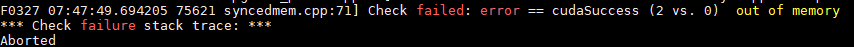
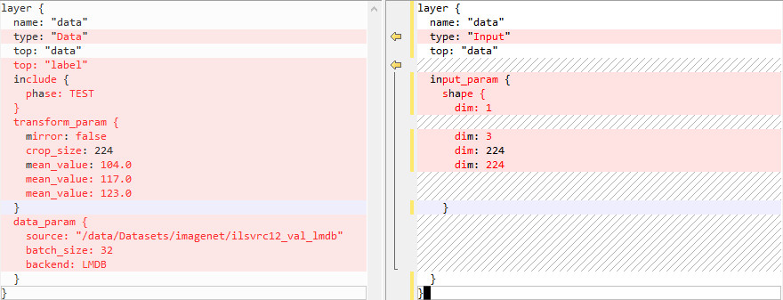
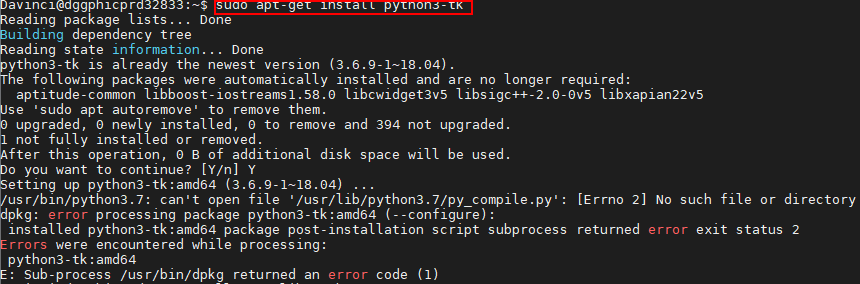
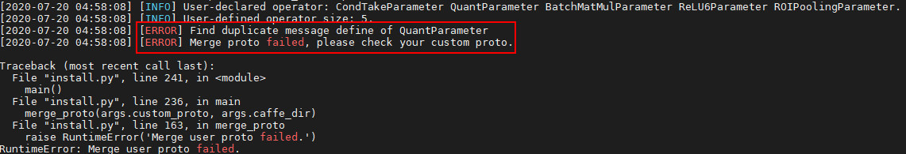
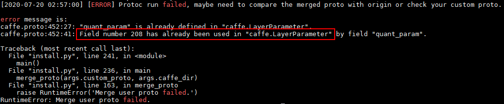
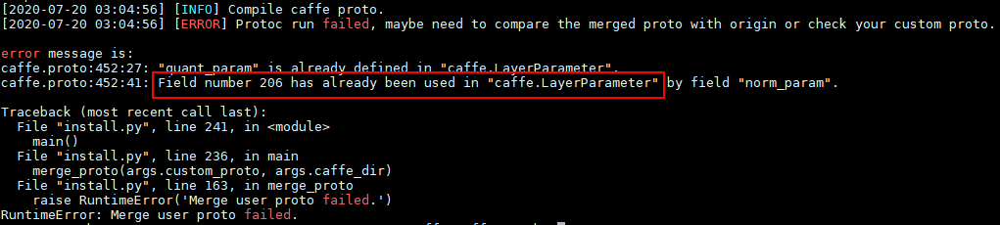
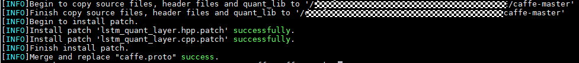
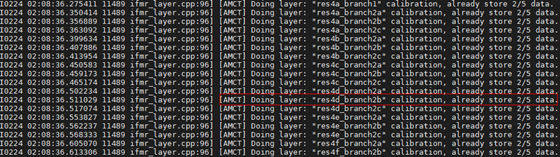
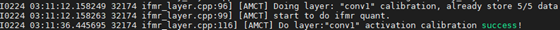

前言
前言
本文档详细介绍了如何使用AMCT，对Caffe框架的网络模型进行量化。
与本文档相对应的产品版本如下。
说明：
本文如无特殊说明，Hi3519DV500与Hi3516DV500内容完全一致；Hi3516CV608与Hi3516CV610内容完全一致。
本文档主要适用于以下工程师：
- 技术支持工程师
- 软件开发工程师
掌握以下经验和技能可以更好地理解本文档：
- 熟悉Linux基本命令。
- 对_图像分析方法_有一定的了解。
在本文中可能出现下列标志，它们所代表的含义如下。


修订记录累积了每次文档更新的说明。最新版本的文档包含以前所有文档版本的更新内容。
概述
简介
须知：
文中的Ubuntu XX.XX均指 Ubuntu 18.04 (Hi3519DV500)或Ubuntu 22.04 (Hi3516CV610)。
本文介绍如何通过高级模型压缩工具（Advanced Model Compression Toolkit，简称AMCT）对Caffe框架的原始网络模型进行量化，量化是指对模型的权重（weight）和数据（activation）进行低比特处理，让最终生成的网络模型更加轻量化，从而达到节省网络模型存储空间、降低传输时延、提高计算效率，达到性能提升与优化的目标。
AMCT是基于Caffe框架的Python工具包，实现了模型中融合（主要为BN融合）、数据与权重8比特量化的功能，该工具将量化和模型转换分开，实现对模型中可量化算子的独立量化，并将量化后的模型保存为.prototxt文件和.caffemodel文件。其中量化后的fakequant模型可以在CPU或者GPU上运行，完成量化精度评估；量化后的部署模型可以部署在SoC上运行，达到提升推理性能的目的。该工具优点如下：
- 使用方便，安装工具包、重新编译Caffe即可。
- 接口简单，在用户基于Caffe框架的推理脚本基础上，调用API即可完成量化。
- 与硬件配套，生成的部署模型（deploy模型）经过ATC工具转换后可实现8比特推理。
- 量化可配置，用户可自行修改量化配置文件，调整量化策略，获取较优的量化结果。
AMCT使用场景如图1所示，AMCT当前仅支持在Ubuntu XX.XX架构操作系统进行部署，配套信息请参见"环境准备"。使用该工具量化完的模型，需要借助ATC工具转换成SoC的离线模型，然后完成推理操作。

基本功能
训练后量化与量化感知训练
概念介绍
根据量化方法不同，分为训练后量化（Post-Training Quantization）和量化感知训练（Quantization-Aware Training）。
上述两种量化方法，根据量化对象不同，分为权重（weight）量化和数据（activation）量化，对权重数据进行压缩又分为均匀量化和非均匀量化 (Hi3516CV610不支持非均匀量化）。
下面分别介绍训练后量化和量化感知训练相关概念：
训练后量化：是指将训练后模型中的权重由float32量化到int8，并通过少量校准数据对数据（activation）进行校准量化。量化过程请参见"训练后量化"。训练后量化不支持多个GPU同时运行。
-
校准数据集
数据的量化因子的确定过程（calibration过程），网络模型将校准集中的每一份数据作为输入进行前向推理，量化算法积攒下每个待量化层/算子的对应输入数据，据此来确定量化因子。由于量化因子的确定和校准数据集的选择相关，量化后模型的精度也和校准数据集的选择相关，推荐使用验证集的子集作为校准数据集。
-
数据（activation）量化
数据量化是对每个待量化的层/算子的输入数据进行统计，每个层/算子计算出最优的一组scale和offset（参数解释请参见"量化因子记录文件说明"）。
数据是模型推理计算的中间结果，其范围与模型输入相关，因此需要使用一组参考输入（校准数据集）作为激励，从而记录下来待量化层/算子的输入数据，搜索得到量化因子（scale和offset）。由于在做数据calibration的过程中，需要占用额外的存储空间（显存/内存）来存储用于确定量化因子的输入数据，所以对于显存/内存的占用，比仅推理的过程要高，额外占用空间的大小和calibration过程中的batch_size* batch_num正相关。
-
权重（weight）量化
训练后模型的权值已经确定，数值的范围也已经确定，因此直接根据权值的数据范围进行量化。
-
均匀量化
是指量化后的数据比较均匀地分布在某个数值空间中，例如int8量化就是用只有8比特的int8数据来表示32比特的FP32数据，将FP32的运算过程（乘加运算）转换为int8的运算，加速运算和实现模型压缩；均匀的int8量化则是量化后数据比较均匀地分布在int8的数值空间[-128, 127]中，量化过程请参见"均匀量化"。
- 如果均匀量化后的模型精度无法满足要求，则需要进行量化感知训练。
- 当前支持的带权重均匀量化层为：全连接层（InnerProduct）、卷积层（Convolution和DepthwiseConv）、反卷积层（Deconvolution）、RNN、LSTM、GRU。
- 当前支持的不带权重均匀量化层为：PassThrough, Pooling, PSROIPooling, ROIPooling, SPP, Upsample, Eltwise, Slice, Concat, Softmax, ROIAlign, AbsVal, BNLL, CReLU, ELU, Exp, Interp, Log, LRN, Mvm, Nms, Normalize, Power, PReLU, Reduction, ReLU, Sigmoid, Sort, Threshold, Scale, BatchNorm, Bias, Reshape, ShuffleChannel, Crop，Split，Axpy, Flatten, Permute, Tile, Split, ArgMax, Clip, Hswish, MVN, Reorg, TanH, MatMul, RReLU, ReLU6,Reverse
-
非均匀量化
对权重数据量化过程中做了聚类，使得散布的权重数据量化到给定大小与范围的整数集合内。当前非均匀量化仅支持int4量化，即用[0,15]的数值空间表示该层的所有权重数据，降低权重数据搬移指令占比，从而提升推理运行的性能。在非均匀量化中也会包含均匀量化的过程，对Bias仍然使用int8的量化系数进行量化。量化过程请参见"非均匀量化"。
- 如果非均匀量化后的模型精度无法满足要求，可以转为均匀量化。
- 当前支持的带权重非均匀量化层为：全连接层（InnerProduct）、卷积层（Convolution和DepthwiseConv）、反卷积层（Deconvolution）。
- Hi3516CV610不支持。
量化感知训练(Quantization-Aware Training)：是指借助用户完整训练数据集，在训练过程中引入量化操作，通过在训练前向计算中对数据和权重进行量化反量化，引入量化误差损失，从而在训练过程中提高模型对量化效应的适应能力，提高最终的量化模型精度。
量化感知训练缺点是较为耗时，同时需要大量数据。量化过程请参见"量化感知训练"。
当前支持的带权重均匀量化层为：全连接层（InnerProduct）、卷积层（Convolution和DepthwiseConv）、反卷积层（Deconvolution）。
当前支持的不带权重均匀量化层为：PassThrough, Pooling, PSROIPooling, ROIPooling, SPP, Upsample, Eltwise, Slice, Concat, Softmax, ROIAlign, AbsVal, BNLL, CReLU, ELU, Exp, Interp, Log, LRN, Mvm, Nms, Normalize, Power, PReLU, Reduction, ReLU, Sigmoid, Sort, Threshold, Scale, BatchNorm, Bias, Reshape, ShuffleChannel, Crop, Axpy, Flatten, Permute, Tile, Split, ArgMax, Clip, Hswish, MVN, Reorg, TanH, MatMul, RReLU, ReLU6
-
训练数据集
基于用户训练网络中的数据集。
-
数据（activation）量化
数据量化是迭代训练截断最大值和截断最小值，并通过这两个值来计算当前的scale和offset。数据是模型推理计算的中间结果，通过ulq retrain算法，在量化感知训练的过程中，不断优化这两个参数，得到最终的最优参数。
-
权重（weight）量化
权重量化指的是在量化感知训练的过程中不断优化权重的量化参数，得到最终的权重量化参数。
InnerProduct和RNN、LSTM、GRU中的InnerProduct都只支持channelwise为false的量化。
实现原理
AMCT原理如图1所示，蓝色部分为用户实现，灰色部分为用户调用AMCT提供的API实现，用户在Caffe原始网络推理的代码中导入库，并在特定的位置调用相应API，即可实现量化功能。工具使用分为如下场景：
-
训练后量化
-
- 用户首先构造Caffe的原始模型，然后使用create_quant_config生成量化配置文件。
- 根据Caffe模型和量化配置文件，调用init接口，初始化工具，配置量化因子存储文件，将模型解析为图结构graph。
-
调用weights_quantize_model和activation_quantize_model接口对原始Caffe模型的图结构graph进行优化，修改后的模型中包含了量化算法，用户使用该模型借助AMCT提供的数据集和校准集，在Caffe环境中进行inference，可以得到量化因子。
其中数据集用于在Caffe环境中对模型进行推理时，测试量化数据的精度；校准集用来产生量化因子，保证精度。
-
最后用户可以调用save_model接口保存模型，包括可在Caffe环境中进行量化精度评估的模型文件和权重文件，以及可部署在SoC的模型文件和权重文件。
-
场景2
如果用户不使用 场景1中的接口，而是用自己计算得到的量化因子以及Caffe原始模型，生成量化后的部署模型和精度方案模型，则需要使用convert_model接口完成相关量化动作。该场景下的量化示例请参见convert_model接口量化示例。
-
-
量化感知训练
- 用户首先构造Caffe的原始模型，然后使用create_quant_retrain_config生成量化配置文件。
- 在solver.prototxt中增加TEST phase（test_interval > 0，test_iter > 0），并且关闭预测试（test_initialization=false），具体修改样例请参见"量化步骤"（说明：配置solver.prototxt中net为AMCT生成的模型，而非train_net或test_net）。
- 调用create_quant_retrain_model接口对原始Caffe模型进行优化，修改后的模型中包含了量化算法，用户使用该模型借助AMCT提供的数据集和校准集，在Caffe环境中进行重训练，可以得到量化因子。
- 最后用户可以调用save_quant_retrain_model接口保存模型，包括可在Caffe环境中进行精度评估的模型文件和权重文件，以及可部署在SoC的模型文件和权重文件。

工具实现的融合功能
当前该工具主要实现的是BN融合功能，分为如下几类：
- Conv+BN+Scale+Bias融合：先把"BatchNorm"向前面相邻的"Conv"融合，融合后"BatchNorm"层会被删除，然后再依次对"Scale"、"Bias"做类似处理。
- DepthwiseConv+BN+Scale+Bias融合：先把"BatchNorm"向前面相邻的"DepthwiseConv"融合，融合后"BatchNorm"层会被删除，然后再依次对"Scale"、"Bias"做类似处理。
- Deconv+BN+Scale+Bias融合：先把"BatchNorm"向前面相邻的"Deconv"融合，融合后"BatchNorm"层会被删除，然后再依次对"Scale"、"Bias"做类似处理。
- FC+BN+Scale+Bias融合：先把"BatchNorm"向前面相邻的"FC"融合，融合后"BatchNorm"层会被删除，然后再依次对"Scale"、"Bias"做类似处理。
Scale和Bias都只支持C轴方向的融合，即axis=1 or -3, num_axis=1的场景。
工具实现的加速优化
BN+Scale+Bias加速：如果融合操作完成后，模型中仍然存在"BatchNorm"、"Scale"、"Bias"结构，而且配置文件中开启了这些层的数据量化，工具就会在这些层前面插入一个"DepthwiseConv"层，按照"BatchNorm"、"Scale"、"Bias"的顺序往"DepthwiseConv"中进行融合。
Scale和Bias都只支持C轴方向的加速，即axis=1 or -3, num_axis=1的场景。
运行流程
具体运行流程如表1所示。
表 1 操作步骤说明
安装前请先获取对应软件包，详情请参见"获取软件包"。 |
|
安装AMCT之前，需要创建AMCT的安装用户，检查系统环境是否满足要求，安装依赖以及上传软件包等一系列操作。详细操作请参见"安装前准备"。 |
|
参见"安装AMCT"安装Caffe框架的AMCT。 |
|
安装完AMCT后，需要参见"安装后处理"章节完成proto合并与patch安装，然后重新编译Caffe环境；如果要设置量化过程中打印的日志等级信息，还需要设置环境变量等操作。 |
|
如果用户需要量化自己的网络模型，不使用本手册提供的sample进行量化，则需要修改量化脚本，进行适配，然后才能进行量化。关于sample代码解析请参见"sample代码解析"。 |
|
用户根据准备的原始网络模型以及数据集，采用本手册提供的量化脚本，进行量化。 |
|
用户使用上述量化后的部署模型，通过MindCmd工具转换成SoC的离线模型，详细可参考对应的用户指南，然后可以使用该模型进行推理。 |
安装AMCT
获取软件包
AMCT只支持在Ubuntu XX.XX x86_64架构服务器安装；安装前，请先获取AMCT软件包：amct_caffe
安装前准备
Ubuntu x86系统
用户准备
支持任意用户（root或者非root）安装AMCT，本章节以非root用户为例进行操作。
- 若使用root用户安装，则不需要操作该章节，不需要对root用户做任何设置。
- 若使用已存在的非root用户安装，须保证该用户对$HOME目录具有读写以及可执行权限。
-
若使用新的非root用户安装，请参考如下步骤进行创建，如下操作请在root用户下执行。本手册以该种场景为例执行AMCT的安装。
-
执行以下命令创建AMCT安装用户并设置该用户的$HOME目录。
-
执行以下命令设置密码。
-
username 为安装AMCT的用户名，该用户的umask值不能小于0027：
- 若要查看umask的值，则执行命令：umask
- 若要修改umask的值，则执行命令：umask 新的取值
配置AMCT安装用户权限（可选）
当用户使用非root用户安装时，需要操作该章节，否则请忽略。
AMCT安装前需要下载相关依赖软件，下载依赖软件需要使用sudo apt-get权限，请以root用户执行如下操作。
-
打开“/etc/sudoers”文件：
-
在该文件“# User privilege specification”下面增加如下内容：
Hi3519DV500:
username ALL=(ALL:ALL) NOPASSWD:SETENV:/usr/bin/apt-get,/usr/bin/pip, /bin/tar, /bin/mkdir, /bin/sh, /bin/bash, /usr/bin/make, /usr/bin/pip3, /usr/bin/pip3.7, /usr/bin/pip3.7.5, /bin/lnHi3516CV610:
username ALL=(ALL:ALL) NOPASSWD:SETENV:/usr/bin/apt-get,/usr/local/bin/pip, /usr/bin/tar, /usr/bin/mkdir, /usr/bin/sh, /usr/bin/bash, /usr/bin/make, /usr/local/bin/pip3, /usr/local/bin/pip3.10, /usr/local/bin/pip3.10.12, /usr/bin/ln“username”为执行安装脚本的非root用户名。
说明：
请确保“/etc/sudoers”文件的最后一行为“#includedir /etc/sudoers.d”，如果没有该信息，请手动添加。 -
添加完成后，执行:wq!保存文件。
-
执行以下命令取消“/etc/sudoers”文件的写权限：
环境准备
AMCT目前仅支持在Ubuntu XX.XX x86_64架构操作系统安装，配套信息如下：
表 1 Ubuntu XX.XX x86_64架构配套版本信息
请从http://old-releases.ubuntu.com/releases/网站下载对应版本软件进行安装，例如可以下载Server版：ubuntu-18.04-server-amd64.iso。 |
请从https://releases.ubuntu.com/22.04/网站下载对应版本软件进行安装。 |
||||
|
|||||
请参考Caffe官方指导准备Caffe环境：https://github.com/BVLC/caffe/tree/1.0。 |
|||||
检查源
安装依赖时，请确保AMCT所在服务器能够连接网络，请在root用户下执行如下命令检查源是否可用。
如果命令执行报错，则检查网络是否连接或者把“/etc/apt/sources.list”文件中的源更换为可用的源。
安装依赖
请使用AMCT的安装用户安装依赖的软件，如果安装用户为非root，则需要使用su - username命令切换到非root用户执行如下命令。
Hi3516CV610 表1环境安装说明以python3.10.12为例进行说明，python3.9.11与之相同，不再赘述。
表 1 依赖列表
https://pypi.org/project/Pillow/6.0.0/#files (Pillow7.0.0版本不支持jpeg格式) |
|||||||
上传软件包
以AMCT的安装用户将amct_caffe软件包上传到Linux服务器任意目录下，本示例为上传到$HOME/amct/目录。
获得如下内容：
表 1 AMCT软件包解压后内容
|
|||
其中：{version}_表示AMCT具体版本号。{arch}_表示操作系统的架构。
安装
-
在AMCT软件包所在目录，执行如下命令进行安装：
其中：{version}_表示AMCT具体版本号，{arch}_表示软件包支持的安装服务器具体架构形态。如果用户使用root用户安装AMCT，并且使用了--target参数，请确保--target参数指定的路径为当前用户的路径，避免指定到其他非root用户的路径。
-
若出现如下信息则说明工具安装成功。
用户可以在pythonX.X.X 安装包所在路径下（例如：$HOME/.local/lib/pythonX.X.X/site-packages，该路径请以用户实际安装的为准）查看已经安装的AMCT，例如：
drwxr-xr-x 5 amct amct 4096 Mar 17 11:50 hotwheels/ drwxr-xr-x 2 amct amct 4096 Mar 17 11:50 hotwheels_amct_caffe-2.0.0.dist-info/其中amct_caffe即为AMCT所在安装目录。
安装后处理
patch安装
安装完AMCT后，量化模型前，用户需要获取并安装Caffe源代码增强包caffe_patch.tar.gz，该增强包用于完成如下内容：
-
如果AMCT所在服务器有用户自定义的custom.proto文件，则需要和AMCT软件包中提供的proto文件进行合并。该软件包提供了AMCT自定义层以及caffe-master相较于caffe1.0更新层的caffe_proto_for_svp.patch补丁文件，用户需要使用软件包提供的caffe_proto_for_svp.patch补丁包在caffe-1.0版本的caffe.proto基础上，合并成新的caffe.proto。proto合并原理请参见"proto合并原理"。
合并流程以及原则：
-
用户需准备Caffe1.0的caffe.proto文件复制到caffe_patch/merge_proto文件夹中，运行命令patch caffe.proto caffe_proto_for_svp.patch，得到caffe.proto会覆盖原始的文件。
- 注意复制的caffe.proto文件必须是Caffe1.0原始的文件。
- caffe_patch/merge_proto/caffe_proto_for_svp.patch文件中有Caffe1.0的下载地址和使用说明。
-
用户准备自定义的custom.proto，执行AMCT提供的install.py脚本，该脚本会将用户的custom.proto与AMCT提供的amct_custom.proto进行合并，生成中间文件custom.proto。
- 如果custom.proto和amct_custom.proto存在算子编号冲突的场景，则报错，提示用户修改custom.proto的算子编号。
- 如果custom.proto和amct_custom.proto存在算子名相同的场景，则报错，提示用户修改custom.proto的算子名。
-
将生成的中间文件custom.proto与打过补丁的caffe.proto进行合并，生成最终的caffe.proto。
- 如果custom.proto和caffe.proto存在算子编号冲突的场景，则报错，提示用户修改custom.proto的算子编号。
- 如果custom.proto和caffe.proto存在算子名相同的场景，做去重处理，以custom.proto为准。
-
最后会根据用户指定的caffe_dir路径，找到用户caffe工程下的caffe.proto文件，对其进行备份后替换。
说明：
- amct_custom.proto中的编号从200000开始（包括200000）。
- caffe.proto中ATC自定义层的编号区间段为：[5000,200000)。
- custom.proto中用户自定义层编号建议区间段小于5000，并且不与ATC提供的caffe.proto中的内置编号冲突。 -
拷贝新增源码和动态库文件到Caffe环境_caffe-master_工程目录下。
-
对Caffe环境_caffe-master_工程目录下部分文件安装patch，以实现对文件的自动修改。
proto合并前提条件
用户自行准备自定义的custom.proto，并上传到AMCT所在服务器任意目录。样例如下：
message LayerParameter {
optional ReLU6Parameter relu6_param = 2060;
optional ROIPoolingParameter roi_pooling_param = 8266711;
}
message ReLU6Parameter {
optional float negative_slope = 1 [default = 0];
}
message ROIPoolingParameter {
// Pad, kernel size, and stride are all given as a single value for equal
// dimensions in height and width or as Y, X pairs.
optional uint32 pooled_h = 1 [default = 0]; // The pooled output height
optional uint32 pooled_w = 2 [default = 0]; // The pooled output width
// Multiplicative spatial scale factor to translate ROI coords from their
// input scale to the scale used when pooling
optional float spatial_scale = 3 [default = 1];
}
custom.proto主要分为两部分：
-
LayerParameter注册自定义层：
message LayerParameter { # user definition fields, each field takes one line. optional FieldType0 field_name0 = field_num0; optional FieldType1 field_name1 = field_num1; }该字段用于在LayerParameter中声明用户自定义层，用户自定义层需要加入到 LayerParameter中，从而可以在Caffe框架中写入Layer并从Layer中读取到；该声明分为四个部分：
- optional：表示该定义在LayerParameter中是可选的，只能配置为optional。
- FieldType：声明当前字段对应的自定义类型，需要有相应的message定义。
- field_name：声明当前的id，需要唯一，如果提示冲突，需要用户修改自己的id名称，后续需要通过该id来访问相应的内容。
- field_num：声明当前的编号，需要唯一，如果提示冲突，需要用户修改自己的编号值，建议区间段小于5000，并且不与ATC提供的caffe.proto中的编号冲突，在二进制caffemodel中需要通过该编号去解析对应字段。
示例如下：
message LayerParameter { optional ReLU6Parameter relu6_param = 2060; optional ROIPoolingParameter roi_pooling_param = 8266711; } 说明：
- custom.proto中用户自定义层编号建议区间段小于5000，并且不与ATC提供的caffe.proto中的内置编号冲突。
- amct_custom.proto中的编号从200000开始（包括200000）。
- caffe.proto中ATC自定义层的编号区间段为：[5000,200000)。 -
message定义自定义层参数：
用户自定义层参数定义，用于定义用户自定义层详细的参数内容，详细内容可以参考google protobuf。
该字段需要保证和AMCT自定义层amct_custom.proto不冲突，如果冲突，proto合并时会提示错误信息，用户根据提示信息进行修改；与ATC内置caffe.proto冲突则会优先使用用户的message定义覆盖。
当前AMCT自定义message包括：QuantParameter、DeQuantParameter、IFMRParameter、LSTMQuantParameter、SearchNParameter、 RetrainDataQuantParameter、RetrainWeightQuantParameter、SingleLayerRecord、 ScaleOffsetRecord，用户自定义层时不能同上述message名重复。
安装步骤
用户可以执行caffe_patch中的自动安装脚本install.py，如果脚本执行成功，则会自动将caffe_patch中的patch内容安装到Caffe环境_caffe-master_工程目录下，并完成proto合并、新增源码和动态库文件替换的功能。安装或手动修改完成后，需要重新编译Caffe环境。具体操作方法如下：
-
解压Caffe源代码增强包。
以AMCT的安装用户在软件包所在路径执行如下命令，解压caffe_patch.tar.gz软件包：
获得如下内容：
- caffe_patch/include：用于存放自定义层定义头文件以及公共函数。
- caffe_patch/install.py：Caffe环境proto合并、patch安装以及源码和动态库文件执行脚本。
- caffe_patch/merge_proto：proto合并目录。
- caffe_patch/patch：LSTM层相关的patch目录。
- caffe_patch/quant_lib：用于存放量化算法核心动态库libquant.so, libquant_gpu.so。
- caffe_patch/src：用于存放自定义层实现源码文件以及公共函数。
关于其余文件的详细说明请参见"sample目录及patch目录说明"。
-
切换到caffe_patch/install.py脚本所在目录，执行如下命令。
参数解释如下：
表 1 量化脚本所用参数说明
--custom_proto CUSTOM_PROTO_FILE
可选。用户自定义custom.proto文件路径，支持相对路径和绝对路径。
使用样例如下：
若提示如下信息，则说明执行成功。
[INFO]Begin to copy source files, header files and quant_lib to '$HOME/AMCT/AMCT_CAFFE/caffe-master' [INFO]Finish copy source files, header files and quant_lib to '$HOME/AMCT/AMCT_CAFFE/caffe-master' # 安装patch [INFO]Begin to install patch. [INFO]Install patch 'lstm_calibration_layer.cpp.patch' successfully. [INFO]Install patch 'lstm_quant_layer.hpp.patch' successfully. [INFO]Install patch 'lstm_quant_layer.cpp.patch' successfully. [INFO]Install patch 'lstm_quant_layer.hpp.patch' successfully. [INFO]Finish install patch. # proto合并 [INFO]Merge and replace "caffe.proto" success. # 修改Makefile [INFO]Merge and replace "Makefile" success.执行脚本过程中（使用install.py脚本时，支持重复安装patch）：
- 如果安装patch失败，则请用户自行将caffe工程中caffe-master/src/caffe/layers/lstm_layer.cpp和caffe-master/include/caffe/layers/lstm_layer.hpp文件还原为caffe-master原生的文件。
- proto合并阶段如果提示ERROR信息，则请参见"执行proto合并时提示ERROR信息"解决。
- 如果修改Makefile失败，则请根据提示信息进行修改；如果执行成功，则再次执行该脚本时，不会重复修改Makefile。
-
（可选）该步骤修改只针对检测网络生效，如果不执行检测网络的sample，则请忽略该步骤。
修改caffe-master/src/caffe/proto/caffe.proto，增加自定义层。
-
在“message LayerParameter”最后增加如下信息：
-
文件最后增加如下信息：
// Message that stores parameters used by ROIPoolingLayer message ROIPoolingParameter { // Pad, kernel size, and stride are all given as a single value for equal // dimensions in height and width or as Y, X pairs. optional uint32 pooled_h = 1 [default = 0]; // The pooled output height optional uint32 pooled_w = 2 [default = 0]; // The pooled output width // Multiplicative spatial scale factor to translate ROI coords from their // input scale to the scale used when pooling optional float spatial_scale = 3 [default = 1]; } -
切换到caffe-master，修改caffe-master/Makefile.config。
增加python layer的实现。
-
-
新增c++11标准代码的支持。
由于AMCT新增算子需要c++11支持，需要确保caffe-master/Makefile中增加了-std=c++11编译选项，增加方法如下：
-
返回caffe-master目录，执行如下命令重新编译Caffe以及pycaffe环境：
#如果用户环境安装patch之前已经编译过Caffe工程，安装patch之后，需要先执行make clean，然后再执行编译命令 make clean make all -j && make pycaffe -jcaffe.proto修改后需要重新编译为caffe_pb2.py：由于AMCT需要解析用户的Caffe模型，用户使用Caffe模型时可能会新增自定义层，此时需要修改caffe.proto文件，修改后，需要用户自行提供从修改后的caffe.proto文件编译出的caffe_pb2.py，给AMCT使用。
说明：
- 如果用户使用protoc方式来重新编译caffe.proto，例如protoc --python_out=./caffe.proto，此时，需要同步修改PYTHONPATH中caffe.proto所在路径。如下所示，${path}请替换为caffe.proto实际路径。
export PYTHONPATH=$PYTHONPATH:${path}
- 如果使用cafe时出现：libquant_gpu.soImportError: libquant_gpu.so: cannot open shared object file: No such file or directory，则需要运行 export LD_LIBRARY_PATH=/your_caffe_dir/quant_lib:$LD_LIBRARY_PATH
环境变量设置
设置日志打印级别，其中日志包括打印在屏幕上的日志以及保存到amct_log/amct_caffe.log文件中的日志。该部分环境变量为可选配置，如果不设置，则按照默认日志级别，默认级别为INFO。
-
变量取值
日志打印级别通过如下两个变量设置：
- AMCT_LOG_FILE_LEVEL： 控制amct_caffe.log日志文件的信息级别以及生成精度仿真模型时，对应量化层生成的日志文件信息级别。
- AMCT_LOG_LEVEL：控制屏幕输出的信息级别。
有效取值以及含义如表1所示。
表 1 变量取值范围
信息级别不区分大小写，即Info、info、INFO均为有效取值。
-
使用示例
如下命令只是样例，用户根据实际情况进行设置。
-
将量化日志amct_caffe.log信息级别设置为INFO级别。
-
将屏幕打印输出信息级别设置为INFO级别。
-
训练后量化
sample代码解析
本章节详细给出训练后量化的模板代码的解析说明，通过解读该代码，用户可以详细了解AMCT的工作流程以及原理，方便用户基于已有模板代码进行修改，以便适配其他网络模型的量化。
解析前提
在量化sample包amct_caffe_sample.tar.gz所在路径下执行如下解压命令：
其中：
- amct_caffe_calibration_template.py：训练后量化的模板代码。
- resnet50/：分类网络模型ResNet50量化目录。详细使用说明请参见"分类网络模型量化"。
- faster_rcnn/：检测网络模型FasterRCNN量化目录。详细使用说明请参见"检测网络模型量化"。
- mnist/：MNIST网络模型量化目录，详细使用说明请参见"MNIST网络模型量化"。
目录中详细文件的说明请参见"sample目录及patch目录说明"。
AMCT使用流程
-
设置运行设备模式。
AMCT所使用的API分别是amct.set_gpu_mode()和amct.set_cpu_mode()，与Caffe框架相关，因此在GPU模式下，多GPU device的选择是通过Caffe的API即caffe.set_mode_gpu()和caffe.set_device(args.gpu_id)来实现的，因此需要先配置Caffe的运行设备模式，再配置AMCT的设备模式。另外因为此处已经指定了运行设备，模型推理函数中无需再次配置运行设备，代码样例如下：
-
建议首先运行Caffe框架下原始模型推理，验证推理脚本及环境是否OK：
-
解析用户模型，生成全量量化配置文件：
- 如果通过简易配置文件生成，则需要指定config_defination参数的输入，其余入参将无效，可以不用输入。
- 默认可使用API入参指定量化参数skip_layers、batch_num，activation_offset来生成量化配置文件，代码样例如下：
# Generate quantize configurations config_json_file = 'tmp/config.json' batch_num = 2 if args.cfg_define is not None: amct.create_quant_config(config_json_file, args.model_file, args.weights_file, config_defination=args.cfg_define) else: skip_layers = [] amct.create_quant_config(config_json_file, args.model_file, args.weights_file, batch_num) -
执行量化：
-
初始化AMCT，读取用户全量量化配置文件、解析用户模型文件、生成用户内部修改模型的Graph IR：
-
执行图融合、执行权重离线量化以及插入数据量化层得到校准模型，从而在后续calibration推理过程中执行数据量化动作：
# Phase1: Do conv+bn+scale fusion, weights calibration and fake # quantize, insert data-quantize layer modified_model_file = 'tmp/modified_model.prototxt' modified_weights_file = 'tmp/modified_model.caffemodel' amct.weights_quantize_model(graph, modified_model_file, modified_weights_file) amct.activation_quantize_model(graph, modified_model_file, modified_weights_file) -
执行校准模型推理，完成数据量化，该步骤所需要的推理iterations数量需要大于等于设置用于数量量化的batch_num参数；
-
执行量化后图优化动作，并保存得到最终的量化部署模型(deploy)和量化仿真模型(fake_quant)
-
（可选）执行量化仿真模型(fake_quant)推理，测试量化后模型精度：
# Phase4: if need test quantized model, uncomment to do final fake quant # model test. fake_quant_model = 'results/%s_fake_quant_model.prototxt'.format(args.model_name) fake_quant_weights = 'results/%s_fake_quant_weights.caffemodel'.format(args.model_name) run_caffe_model(fake_quant_model, fake_quant_weights, args.iterations)
-
用户修改部分
-
修改执行入参代码：
用于传入AMCT所使用的执行入参（该步骤非必须，用户可使用任意方式实现类似功能，也可以直接将参数写到sample样例代码里面）。代码样例如下：
class Args(object): """struct for Args""" def __init__(self): self.model_name = '' # Caffe model name as prefix to save model self.model_file = '' # user caffe model txt define file self.weights_file = '' # user caffe model binary weights file self.cpu = True # If True, force to CPU mode, else set to False self.gpu_id = 0 # Set the gpu id to use self.pre_test = False # Set true to run original model test, set # False to run quantize with amct_caffe tool self.iterations = 5 # Iteration to run caffe model self.cfg_define = None # If None use args = Args() #############################user modified start######################### """User set basic info to use amct_caffe tool """ # e.g. args.model_name = 'ResNet50' args.model_file = 'pre_model/ResNet-50-deploy.prototxt' args.weights_file = 'pre_model/ResNet-50-model.caffemodel' args.cpu = True args.gpu_id = None args.pre_test = False args.iterations = 5 args.cfg_define = None #############################user modified end########################### -
修改执行Caffe模型推理的代码：
代码样例如下：
def run_caffe_model(model_file, weights_file, iterations): """run caffe model forward""" net = caffe.Net(model_file, weights_file, caffe.TEST) #############################user modified start######################### """User modified to execute caffe model forward """ # # e.g. # for iter_num in range(iterations): # data = get_data() # forward_kwargs = {'data': data} # blobs_out = net.forward(**forward_kwargs) # # if have label and need check network forward result # post_process(blobs_out) # return #############################user modified end###########################代码解析如下，需要用户根据具体业务网络实现对传入模型的推理工作：
-
加载传入模型文件，得到Caffe Net示例（推理时设置phase为caffe.TEST）：
-
根据入参的iterations来循环执行指定次数推理。
-
获取每次推理所需要的网络数据，需要根据具体业务网络完成数据预处理操作（例如ResNet50，一般需要将YUV图片转换为RGB，然后缩放到224尺寸，再减去各通道均值）；然后通过字典的形式，根据网络输入的blob名称来构建相应的输入，如果有多个输入，则分别按照key(blob名称):value(numpy数组)的格式构建相应输入：
-
执行一次网络的前向推理，并获取网络的输出：
-
Caffe执行Net的输出blobs_out也是以字典格式存储的输出结果，例如{'prob1': blob1, 'prob2':blob2}，如果要获取输出，可直接按照指定的blob名称获取对应的blob数据结构。
-
（可选）如果用户需要测试网络的输出，可按上述形式获取对应的数据，然后计算分类或者检测结果等；该步骤非AMCT需要，AMCT仅需执行网络推理拿到所有网络中间层数据即可，对于网络的最终计算结果用户可自行选择是否需要进行后处理。
-
均匀量化
该章节介绍如何使用量化脚本对原始Caffe框架的分类、检测等网络模型进行均匀量化。
分类网络模型量化
量化前提
AMCT的安装用户将需要量化的Caffe模型文件和权重文件上传到Linux服务器任意目录下。本章节以sample包中自带的分类网络模型ResNet-50为例进行说明，其中模型文件在执行量化前，需要手动下载，请根据sample下README.md的指引从指定路径下载。
使用AMCT对模型完成量化后，需要对模型进行推理，以测试量化数据的精度。推理过程中需要使用和模型相匹配的数据集。
AMCT的安装用户需将和模型相匹配的数据集上传到Linux服务器任意目录下，本示例以sample包中自带的ResNet-50网络模型对应的images数据集为例进行说明。
校准集用来产生量化因子，保证精度。
计算量化参数的过程被称为“校准(calibration)”。校准过程需要使用一部分测试图片来针对性计算量化参数，使用一个或多个batch对量化后的网络模型进行推理即可完成校准。为了保证量化精度，校准集与测试精度的数据集来源一致。
AMCT的安装用户需将校准集文件上传到Linux服务器任意目录下。
量化示例
量化有两种方式，一是使用ResNet50_sample.py量化脚本量化，该方式需要配置多个参数；另一种是使用该脚本的封装脚本run_resnet50_with_arq.sh进行量化，该种方式配置参数较少，用户根据实际情况选择一种方式进行量化。
-
执行量化。
-
ResNet50_sample.py量化脚本量化
对原始网络模型进行预测试，检测原始模型是否可以在Caffe环境中正常运行。
量化前，需要先将原始模型和数据集在Caffe环境中执行推理过程，以避免数据集和模型不匹配，模型无法在Caffe环境中执行的问题。
在量化脚本所在目录执行如下命令检测ResNet-50网络模型。
pythonX src/ResNet50_sample.py --model_file MODEL_FILE --weights_file WEIGHTS_FILE [--gpu GPU_ID] [--cpu][--iterations ITERATIONS] --caffe_dir CAFFE_DIR [--pre_test]
各参数解释如表1所示。
表 1 量化脚本所用参数说明
[--gpu GPU_ID]与[--cpu]参数不能同时使用，默认为[--cpu]。
可选。量化后使用精度仿真模型进行推理时使用的batch数目。
可选。对量化之前的模型进行预测试，并给出推理结果，用于测试原始模型是否可以在Caffe环境中正常运行。
使用样例如下：
pythonX src/ResNet50_sample.py --model_file pre_model/ResNet-50-deploy.prototxt --weights_file pre_model/ResNet-50-model.caffemodel --gpu 0 --caffe_dir caffe-master --pre_test若出现如下信息，则说明原始模型在Caffe环境中运行正常。
执行量化脚本，对原始网络模型进行量化。
pythonX src/ResNet50_sample.py --model_file pre_model/ResNet-50-deploy.prototxt --weights_file pre_model/ResNet-50-model.caffemodel --gpu 0 --caffe_dir caffe-master若出现如下信息则说明模型量化成功（如下top1，top5的推理精度只是样例，请以实际环境量化结果为准）：
******final top1:0.86875 ******final top5:0.95 //量化后的fake_quant模型在Caffe环境中top1、top5的推理精度 [AMCT][INFO]Run ResNet-50 with quantize success! 说明：
使用GPU对原始网络模型进行量化时，提示GPU资源不足，报错信息如下图所示，则可以参见如下方法解决：
- 切换到显存更高的GPU。
- 查看是否有其它进程占用了GPU资源，等GPU资源空闲之后再使用。
- 若内存足够用，切换到CPU模式运行。

-
run_resnet50_with_arq.sh量化封装脚本进行量化
用户也可以使用sample/resnet50/scripts路径下的量化脚本run_resnet50_with_arq.sh，该脚本是对ResNet50_sample.py量化脚本的封装，简化配置参数，使用起来更方便，使用示例如下。
在sample/resnet50路径下执行如下命令：
参数解释如下：
表 2 量化脚本参数说明
可选。指定GPU设备ID。如果不选择该参数，则默认运行在CPU上。
使用样例如下：
若出现如下信息则说明模型量化成功（如下top1，top5的推理精度只是样例，请以实际环境量化结果为准）：
-
-
量化结果说明。
量化成功后，界面会显示量化后精度仿真模型的推理结果。在量化后模型的同级目录下生成量化日志文件夹amct_log、量化结果文件夹results、量化中间结果文件夹tmp：
- amct_log：记录了工具的日志信息，包括量化过程的日志信息amct_caffe.log。
-
tmp：量化过程中产生的文件，包括：
- config.json：描述了如何对模型中的每一层进行量化。如果量化脚本所在目录下已经存在量化配置文件，则再次调用create_quant_config接口时，如果新生成的量化配置文件与已有的文件同名，则会覆盖已有的量化配置文件，否则生成新的量化配置文件。实际量化过程中，如果量化后的模型推理精度不满足要求，用户可以修改config.json文件，量化配置文件内容、修改原则以及参数解释请参见"量化示例"。
- 中间模型文件modified_model.prototxt、modified_model.caffemodel。
- 记录量化因子的文件scale_offset_record.txt。关于该文件的原型定义请参见"量化因子记录文件说明"。
-
results/calibration_results：量化结果文件，包括量化后的模型文件、权重文件以及模型量化信息文件_ResNet50__quant.json（该文件名称和量化后模型名称保持统一），如下所示。
- ResNet50_deploy_model.prototxt：量化后的可在SoC部署的模型文件。
- ResNet50_deploy_weights.caffemodel：量化后的可在SoC部署的权重文件。
- ResNet50_fake_quant_model.prototxt：量化后的可在Caffe环境进行精度仿真模型文件。
- ResNet50_fake_quant_weights.caffemodel：量化后的可在Caffe环境进行精度仿真权重文件。
- ResNet50_quant.json：量化信息文件（该文件名称和量化后模型名称保持统一），记录了量化模型同原始模型节点的映射关系，用于量化后模型同原始模型精度比对。
- ResNet50_quant_param_record.txt：量化参数文件文本格式(推荐使用)，用于atc生成om模型。
- ResNet50_quant_param_record.bin：量化参数文件二进制格式，用于atc生成om模型。
-
如果用户需要将量化后的deploy模型，转换为适配SoC的离线模型，请参见《MindCmd 用户指南》。
模型精度测试
由于"量化示例"进行的推理和量化校准的过程都是基于自带的图片数据集进行的，因此量化结果仅用于验证量化模型是否成功，不能够作为量化后模型精度验证标准。本章节给出基于ImageNet标准数据集进行量化前后网络精度验证测试的详细步骤。
在使用ImageNet标准数据集之前，需要预先下载ImageNet数据集并调用Caffe提供的工具将其转换成为lmdb格式数据集。
参考Caffe工程caffe-master/examples/imagenet/readme.md文件下载并制作lmdb格式ImageNet数据集。
-
量化前精度测试。
命令如下：
pythonX src/ResNet50_sample.py --model_file pre_model/ResNet-50-deploy.prototxt --weights_file pre_model/ResNet-50-model.caffemodel --gpu 0 --caffe_dir caffe-master --benchmark --dataset caffe-master/examples/imagenet/ilscrc12_val_lmdb --pre_test参数解释请参见"表1"，若出现如下信息则说明执行成功：
-
量化后精度测试。
pythonX src/ResNet50_sample.py --model_file pre_model/ResNet-50-deploy.prototxt --weights_file pre_model/ResNet-50-model.caffemodel --gpu 0 --caffe_dir caffe-master --benchmark --dataset caffe-master/examples/imagenet/ilscrc12_val_lmdb若出现如下信息则说明量化成功（如下top1，top5的推理精度只是样例，请以实际环境量化结果为准）：
用户可以根据量化前后分类精度（top1, top5）的指标，查看量化是否满足要求。
-
量化后精度分析
在均匀量化中，如果量化后的精度不符合预期，可以将量化后模型的逐层中间结果打印下来，使用MindCmd功能进行比对，确定误差比较大的层，来针对性调整量化策略，使用样例如下：
检测网络模型量化
量化前提
请参见"模型准备"。
如果使用FasterRCNN模型，则执行步骤环境初始化时会将模型自动下载到本地，本手册以该场景下的模型为例进行说明，用户也可以自行准备模型。
请参见"数据集准备"。
本手册以FasterRCNN模型自带的数据集为例进行说明，环境初始化时会生成相应数据集。
请参见"校准集准备"。
环境初始化用于获取检测网络源代码、模型文件、权重文件以及数据集等信息, 请参考sample下README.md的指引从指定地址下载资源然后执行初始化。
量化示例
-
对原始网络模型进行预测试，检测原始模型是否可以在Caffe环境中正常运行。
量化前，需要先将原始模型和数据集在Caffe环境中执行推理过程，以避免数据集和模型不匹配、模型无法在Caffe环境中执行的问题。
切换到sample/faster_rcnn/src目录，执行如下命令检测faster_rcnn网络模型。
pythonX faster_rcnn_sample.py --model_file MODEL_FILE --weights_file WEIGHTS_FILE [--gpu GPU_ID] [--cpu][--iterations ITERATIONS] [--pre_test]参数解释如表1所示。
使用样例如下：
pythonX faster_rcnn_sample.py --model_file pre_model/faster_rcnn_test.pt --weights_file pre_model/VGG16_faster_rcnn_final.caffemodel --gpu 0 --pre_test根据src/datasets数据集中检测对象的数量，会展示相应数量的检测结果文件，关闭检测结果文件，若AMCT所在服务器出现如下信息，则说明原始模型在Caffe环境中运行正常。
预检测结果文件存放路径为src/pre_detect_results/。
-
执行量化。
pythonX faster_rcnn_sample.py --model_file pre_model/faster_rcnn_test.pt --weights_file pre_model/VGG16_faster_rcnn_final.caffemodel --gpu 0根据src/datasets数据集中检测对象的数量，展示相应数量的检测结果文件，您可以根据图片上检测框的位置和使用“[--pre_test]”参数后的原始模型的推理结果进行比较。
将所有检测结果文件关闭，在AMCT所在服务器还可以看到如下量化成功信息：
量化后检测结果文件存放路径为src/quant_detect_results/。
-
量化结果展示。
量化成功后，界面会显示量化后精度仿真模型的推理结果。在量化后模型的同级目录下生成量化配置文件config.json、量化日志文件夹amct_log、量化结果文件results、量化中间结果文件tmp等：
-
config.json：描述了如何对模型中的每一层进行量化。如果量化脚本所在目录下已经存在量化配置文件，则再次调用create_quant_config接口时，如果新生成的量化配置文件与已有的文件同名，则会覆盖已有的量化配置文件，否则生成新的量化配置文件。
实际量化过程中，如果量化后的模型推理精度不满足要求，用户可以修改config.json文件，量化配置文件内容、修改原则以及参数解释请参见"量化配置"。
-
amct_log：记录了工具的日志信息，包括量化过程的日志信息amct_caffe.log。
- pre_detect_results：预检测结果文件存放路径。
- quant_detect_results：量化后检测结果文件存放路径。
- tmp：量化过程中产生的文件，包括中间模型文件modified_model.prototxt、modified_model.caffemodel，记录量化因子的文件scale_offset_record/record.txt（关于该文件的原型定义请参见"量化因子记录文件说明"）。
- results：量化结果文件，包括量化后的模型文件、权重文件以及模型量化信息文件，如下所示。
- faster_rcnn_deploy_model.prototxt：量化后的可在SoC部署的模型文件。
- faster_rcnn_deploy_weights.caffemodel：量化后的可在SoC部署的权重文件。
- faster_rcnn_fake_quant_model.prototxt：量化后的可在Caffe环境进行精度仿真模型文件。
- faster_rcnn_fake_quant_weights.caffemodel：量化后的可在Caffe环境进行精度仿真权重文件
- faster_rcnn_quant.json：量化信息文件（该文件名称和量化后模型名称保持统一），记录了量化模型同原始模型节点的映射关系，用于量化后模型同原始模型精度比对。
- faster_rcnn_quant_param_record.txt：量化参数文件文本格式(推荐使用)，用于atc生成om模型。
- faster_rcnn_quant_param_record.bin：量化参数文件二进制格式，用于atc生成om模型。
-
-
如果用户需要将量化后的deploy模型，转换为适配SoC的离线模型，则请参见《MindCmd 用户指南》。
模型精度测试
由于"量化示例"进行的推理和量化校准的过程都是基于自带的图片数据集进行的，因此量化结果仅用于验证量化模型是否成功，不能够作为量化后模型精度验证标准。本章节给出基于VOC2007标准数据集进行量化前后网络精度验证测试的详细步骤。
在初始化环境时增加参数with_benchmark，用于下载VOC2007标准数据集。
执行如下命令初始化环境信息，用于下载VOC2007标准数据集。
bash init_env.sh CPU **/caffe-master with_benchmark
或
bash init_env.sh CPU **/caffe-master pythonX.X.X /usr/include/pythonX.X with_benchmark
环境初始化完成后，除了重新生成"环境初始化"中的文件外，还会额外在amct_caffe_faster_rcnn_sample/datasets目录生成VOCdevkit数据集文件。
如果环境初始化时，加了with_benchmark参数，则后续所有的量化动作都是基于VOC2007标准数据集操作的。
- 若环境初始化时使用CPU参数，则量化时量化命令只能使用[--cpu]参数。
- 若环境初始化时使用GPU参数，则量化时量化命令可以使用[--gpu GPU_ID] 或[--cpu]参数。
用户根据实际情况选择环境初始化使用的参数。
-
量化前精度测试。
命令如下：
pythonX faster_rcnn_sample.py --model_file pre_model/faster_rcnn_test.pt --weights_file pre_model/VGG16_faster_rcnn_final.caffemodel --gpu 0 --pre_test参数解释请参见"表1"，若出现如下信息则说明执行成功：
-
量化后精度测试。
pythonX faster_rcnn_sample.py --model_file pre_model/faster_rcnn_test.pt --weights_file pre_model/VGG16_faster_rcnn_final.caffemodel --gpu 0若出现如下信息则说明量化成功（如下推理精度只是样例，请以实际环境量化结果为准）：
-
用户可以根据量化前后mAP（mean average precision）的取值，查看量化是否满足要求。
convert_model接口量化示例
量化前提
- 模型、数据集、校准集的准备动作请参见"量化前提"。
-
量化因子：
AMCT的安装用户需将其计算得到的量化因子记录文件上传到Linux服务器任意目录下。本手册以sample包中自带的分类网络模型ResNet-50的量化因子为例进行说明。关于量化因子的详细说明请参见"量化因子记录文件说明"。
量化示例
-
对原始网络模型进行预测试，检测原始模型是否可以在Caffe环境中正常运行。
量化前，需要先将原始模型和数据集在Caffe环境中执行推理过程，以避免数据集和模型不匹配、模型无法在Caffe环境中执行的问题。
在sample/resnet50目录执行如下命令检测ResNet-50网络模型。
pythonX src/convert_model.py --model_file MODEL_FILE --weights_file WEIGHTS_FILE --record_file RECORD_FILE [--gpu GPU_ID] [--cpu][--iterations ITERATIONS] --caffe_dir CAFFE_DIR [--pre_test]其中， --record_file RECORD_FILE参数表示量化因子记录文件(.txt)路径，该场景下必填，其余参数解释请参见表1。
使用样例如下：
pythonX src/convert_model.py --model_file pre_model/ResNet-50-deploy.prototxt --weights_file pre_model/ResNet-50-model.caffemodel --record_file pre_model/record.txt --gpu 0 --caffe_dir caffe-master --pre_test若出现如下信息，则说明原始模型在Caffe环境中运行正常。
-
执行量化。
pythonX src/convert_model.py --model_file pre_model/ResNet-50-deploy.prototxt --weights_file pre_model/ResNet-50-model.caffemodel --record_file pre_model/record.txt --gpu 0 --caffe_dir caffe-master若出现如下信息则说明模型量化成功（如下top1，top5的推理精度只是样例，请以实际环境量化结果为准）：
-
量化结果展示。
量化成功后，界面会显示量化后精度仿真模型的推理结果。在量化后模型的同级目录下生成量化日志文件夹amct_log、量化结果文件results。
- amct_log：记录了工具的日志信息，包括量化过程的日志信息amct_caffe.log。
-
results/convert_results：量化结果文件，包括量化后的模型文件、权重文件以及模型量化信息文件，如下所示。
- ResNet50_deploy_model.prototxt：量化后的可在SoC部署的模型文件。
- ResNet50_deploy_weights.caffemodel：量化后的可在SoC部署的权重文件。
- ResNet50_fake_quant_model.prototxt：量化后的可在Caffe环境进行精度仿真的模型文件。
- ResNet50_fake_quant_weights.caffemodel：量化后的可在Caffe环境进行精度仿真的权重文件。
- ResNet50_quant.json：量化信息文件（该文件名称和量化后模型名称保持统一），记录了量化模型同原始模型节点的映射关系，用于量化后模型同原始模型精度比对使用。
- ResNet50_quant_param_record.txt：量化参数文件文本格式(推荐使用)，用于atc生成om模型。
- ResNet50_quant_param_record.bin：量化参数文件二进制格式，用于atc生成om模型。
对该模型重新进行量化时，在量化后模型的同级目录下生成的上述结果文件将会被覆盖。
MNIST网络模型量化
该模型用于快速验证AMCT的量化功能，进行的推理、量化校准的过程都是基于标准MNIST数据集进行，量化结果可用于比较量化前后网络精度验证测试。
量化前提
本手册以sample包中MNIST自带的mnist模型为例进行说明。
请参考对sample下的README.txt从指定地址下载数据集。
请参见校准集准备。
量化示例
-
切换到sample/mnist目录，执行如下命令量化mnist网络模型。
pythonX src/mnist_sample.py --model_file pre_model/mnist-deploy.prototxt --weights_file pre_model/mnist-model.caffemodel --gpu 0 --caffe_dir caffe-master参数解释请参见表1。
若出现如下信息则说明量化成功（如下推理精度只是样例，请以实际环境量化结果为准）：
-
量化成功后，界面会显示量化后精度仿真模型的推理结果、以及量化前和量化后精度测试结果，在量化后模型的同级目录下生成量化日志文件夹amct_log、量化结果文件夹results、量化中间结果文件夹tmp等：
- amct_log：记录了工具的日志信息，包括量化过程的日志信息amct_caffe.log。
-
tmp：量化过程中产生的文件，包括：
- config.json：描述了如何对模型中的每一层进行量化。如果量化脚本所在目录下已经存在量化配置文件，则再次调用create_quant_config接口时，如果新生成的量化配置文件与已有的文件同名，则会覆盖已有的量化配置文件，否则生成新的量化配置文件。实际量化过程中，如果量化后的模型推理精度不满足要求，用户可以修改config.json文件，量化配置文件内容、修改原则以及参数解释请参见"量化配置"。
- 中间模型文件modified_model.prototxt、modified_model.caffemodel
- 记录量化因子的文件：record.txt。关于该文件的原型定义请参见"量化因子记录文件说明"。
- 存放数据集目录：mnist_data和mnist_test_lmdb。
-
results：量化结果文件，包括量化后的模型文件、权重文件以及模型量化信息文件，如下所示：
- mnist_deploy_model.prototxt：量化后的可在SoC部署的模型文件。
- mnist_deploy_weights.caffemodel：量化后的可在SoC部署的权重文件。
- mnist_fake_quant_model.prototxt：量化后的可在Caffe环境进行精度仿真的模型文件。
- mnist_fake_quant_weights.caffemodel：量化后的可在Caffe环境进行精度仿真的权重文件。
- mnist_quant.json：量化信息文件（该文件名称和量化后模型名称保持统一），记录了量化模型同原始模型节点的映射关系，用于量化后模型同原始模型精度比对
- mnist_quant_param_record.txt：量化参数文件文本格式(推荐使用)，用于atc生成om模型
- mnist_quant_param_record.bin：量化参数文件二进制格式，用于atc生成om模型。对该模型重新进行量化时，在量化后模型的同级目录下生成的上述结果文件将会被覆盖。
非均匀量化
Hi3516CV610不支持非均匀量化。
简介
对权重数据量化过程中做了聚类，使得散布的权重数据量化到给定大小与范围的整数集合内。当前非均匀量化仅支持INT4量化，即用[0,15]的数值空间表示该层的所有权重数据，降低权重数据搬移指令占比，从而提升推理运行的性能。在非均匀量化中也会包含均匀量化的过程，对权重中的Bias仍然使用INT8的量化系数进行量化。
由于聚类后权重排布变化较大，相比均匀量化的场景，非均匀量化在做完权重量化以后需要对Bn层的参数进行更新，并且需要将首尾层配置成均匀量化，具体流程如下：

量化示例
-
获取非均匀量化简单配置文件，详细说明以及配置模板请参见"训练后量化简易量化配置文件说明"。
本章节以ResNet-50分类网络sample自带sample/resnet50/src/snq_files/snq_quant.cfg文件为例进行说明。
-
首先将BN更新开关打开，并且配置BN层的更新参数, 不更新BN的话量化后精度会有明显的下降。在Caffe的默认配置中，moving_average_fraction是0.999，这里我们需要重设一个较小的值，保证BN层的权重在比较短的迭代内能得到充分刷新。
-
然后将非均匀量化snq_quantize配置到全局配置common_config中，使得权重量化默认使用非均匀，数据量化使用默认的ifmr_quantize算法。
-
接下来，将首尾层的权重量化配置重置回均匀量化arq_quantize，这里首层 "conv1" 是通过override_layer_configs刷新，由于fc不支持channelwise量化，这里使用override_layer_types统一对fc做了配置，尾层fc1000也包含其中。
override_layer_types : { layer_type : "InnerProduct" calibration_config : { ifmr_quantize : { search_range_start : 0.7 search_range_end : 1.3 search_step : 0.01 max_percentile : 0.999999 min_percentile : 0.999999 num_bits:8 } arq_quantize : { channel_wise : false num_bits:8 } } } override_layer_configs : { layer_name : "conv1" calibration_config : { arq_quantize : { channel_wise : true num_bits:8 } ifmr_quantize : { search_range_start : 0.8 search_range_end : 1.2 search_step : 0.02 max_percentile : 0.999999 min_percentile : 0.999999 num_bits:8 } } }
-
-
执行量化脚本，对原始网络模型进行量化（如果模型没下载，参考"量化前提"下载模型）。
python3 src/snq_resnet50_sample.py --model_file pre_model/ResNet-50-deploy.prototxt --weights_file pre_model/ResNet-50-model.caffemodel --gpu 0 --caffe_dir {your_caffe_dir} --cfg_define snq_files/snq_quant.cfg若出现如下信息则说明模型量化成功（如下top1，top5的推理精度只是样例，请以实际环境量化结果为准）：
******final top1:0.8375 ******final top5:0.95 //量化后的fake_quant模型在Caffe环境中top1、top5的推理精度 [AMCT][INFO]Run ResNet-50 with quantize success!如果想要得到准确的benchmark精度，可以执行
python3 src/snq_resnet50_sample.py --model_file pre_model/ResNet-50-deploy.prototxt --weights_file pre_model/ResNet-50-model.caffemodel --gpu 0 --caffe_dir {your_caffe_dir} --cfg_define src/snq_files/snq_quant.cfg –benchmark –iterations=1563 –dataset {your_dataset_dir}/ilsvrc12_val_lmdb若出现如下信息则说明模型量化成功（如下top1，top5的推理精度只是样例，请以实际环境量化结果为准）：
-
量化成功后，在量化后模型的同级目录下重新生成量化日志文件夹amct_log、量化结果文件夹results、量化中间结果文件夹tmp：
- amct_log：记录了工具的日志信息，包括量化过程的日志信息amct_caffe.log。
-
tmp：量化过程中产生的文件，包括:
- config.json：描述了如何对模型中的每一层进行量化。如果量化脚本所在目录下已经存在量化配置文件，则再次调用create_quant_config 接口时，如果新生成的量化配置文件与已有的文件同名，则会覆盖已有的量化配置文件，否则生成新的量化配置文件。实际量化过程中，如果量化后的模型推理精度不满足要求，用户可以修改config.json文件，量化配置文件内容、修改原则以及参数解释请参见"量化配置"。
- 中间模型文件：modified_model.prototxt、modified_model.caffemodel、activation_modified_model.prototxt、activation_modified_model. caffemodel
- 记录量化因子的文件：scale_offset_record.txt（不带BN融合）、scale_offset_record_update.txt（带BN融合）。关于该文件的原型定义请参见"量化因子记录文件说明"。
-
results/calibration_results：量化结果文件，包括非均匀量化后的模型文件、权重文件以及模型非均匀量化参数，如下所示：
- ResNet50_deploy_model.prototxt：非均匀量化后的可在SoC部署的模型文件。
- ResNet50_deploy_weights.caffemodel：非均匀量化后的可在SoC部署的权重文件。
- ResNet50_fake_quant_model.prototxt：非均匀量化后的可在Caffe环境进行精度仿真模型文件。
- ResNet50_fake_quant_weights.caffemodel：非均匀量化后的可在Caffe环境进行精度仿真权重文件。
- ResNet50_quant_param_record.txt：量化参数文件文本格式(推荐使用)，用于atc生成om模型。
- ResNet50_quant_param_record.bin：量化参数文件二进制格式，用于atc生成om模型。
量化配置
本章节以分类网络量化配置文件为例进行说明。
基本介绍
如果通过create_quant_config接口生成的config.json训练后量化配置文件，推理精度不满足要求，则需要参见该章节不断调整config.json文件中的内容，直至精度满足要求，该文件部分内容样例如下（用户修改json文件时，请确保层名唯一）
-
均匀量化配置文件
{ "version":1, "batch_num":2, "activation_offset":true, "do_fusion":true, "skip_fusion_layers":[], "conv1":{ "quant_enable":true, "activation_quant_params":{ "num_bits":8, "max_percentile":0.999999, "min_percentile":0.999999, "search_range":[ 0.7, 1.3 ], "search_step":0.01 }, "weight_quant_params":{ "wts_algo":"arq_quantize", "channel_wise":true, "num_bits":8 } }, "conv2":{ "quant_enable":true, "activation_quant_params":{ "num_bits":8, "max_percentile":0.999999, "min_percentile":0.999999, "search_range":[ 0.7, 1.3 ], "search_step":0.01 }, "weight_quant_params":{ "wts_algo":"arq_quantize", "channel_wise":false, "num_bits":8 } } } -
非均匀量化配置文件（Hi3516CV610不支持）
{ { "version":1, "batch_num":1, "activation_offset":true, "do_fusion":true, "skip_fusion_layers":[ "conv1" ], "update_bn":true, "bn_update_config":{ "bn_moving_average_fraction":0.5, "bn_update_iterations":30, "bn_dump_dir":"tmp/bn_data" }, "res2a_branch1":{ "quant_enable":true, "activation_quant_params":[ { "num_bits":8, "max_percentile":0.999999, "min_percentile":0.999999, "search_range":[ 0.7, 1.3 ], "search_step":0.01 } ], "weight_quant_params":{ "wts_algo":"snq_quantize", "channel_wise":true, "num_bits":4, "max_iteration":1000, "min_distance":1e-10, "init_algo":"gaussian" } } }
参数配置说明
配置文件中参数说明如下。
表 1 version参数说明
表 2 batch_num参数说明
如果不配置，则使用默认值1，建议校准集图片数量不超过50张，根据batch的大小batch_size计算相应的batch_num数值。 |
|
表 3 activation_offset参数说明
表 4 do_fusion参数说明
取值为true表示开启融合功能，取值为false表示不开启。 当前支持融合的层以及融合规则请参见"工具实现的融合功能"。 |
|
表 5 skip_fusion_layers参数说明
|
当前支持融合的层以及融合规则请参见"工具实现的融合功能"。 |
|
表 6 update_bn参数说明
取true时会将所有BN层的use_global_stats设置为false，权重量化后执行forward，BN层的均值和方差会被刷新然后保存到指定的目录 |
|
表 7 bn_update_config参数说明
表 8 bn_moving_average_fraction参数说明
含义同BN层自带的moving_average_fraction参数，如果BN层中没有配置该参数，就会使用bn_moving_average_fraction作为默认值； |
|
表 9 bn_update_iterations参数说明
BN更新的迭代次数，forward过程中达到迭代次数，程序就会将更新后的权重保存下来，需要和bn_moving_average_fraction配合使用 |
|
表 10 bn_dump_dir参数说明
表 11 layer_config参数说明
|
|
表 12 quant_enable参数说明
表 13 activation_quant_params参数说明
activation_quant_params内部包含如下参数：
|
|
表 14 weight_quant_params参数说明
非均匀量化场景，包括如下参数：（Hi3516CV610不支持）
|
|
表 15 max_percentile参数说明
在从大到小排序的一组数中，决定取第多少大的数，比如有100个数，1.0表示取第100-100*1.0=0，对应的就是第一个大的数。 |
|
表 16 min_percentile参数说明
在从小到大排序的一组数中，决定取第多少小的数，比如有100个数，1.0表示取第100-100*1.0=0，对应的就是第一个小的数。 |
|
表 17 search_range参数说明
|
|
表 18 search_step参数说明
|
搜索次数search_iteration=(search_range_end-search_range_start)/search_step，如果搜索次数过大，搜索时间会很长，该场景下将会导致类似进程卡死的问题。 |
|
表 19 activation_quant_params中num_bits参数说明
控制量化位宽，数据量化场景下可以配置8~16之间的任意值，配置8时按照8bit计算，大于8时根据配置的位宽计算均匀量化的系数，但是最终部署时使用16bit储存(直接使用16bit计算量化系数容易引发溢出问题) |
|
表 20 activation_quant_params中with_offset参数说明
表 21 wts_algo参数说明
表 22 channel_wise参数说明
|
|
表 23 weight_quant_params中num_bits参数说明
表 24 max_iteration参数说明（Hi3516CV610不支持）
表 25 min_distance参数说明（Hi3516CV610不支持）
表 26 init_algo参数说明（Hi3516CV610不支持）
参数调优说明
按照config.json文件中的默认配置进行量化，若量化后的推理精度不满足要求，则按照如下步骤调整训练后量化配置文件中的参数。
- 执行amct_caffe_sample.tar.gz包中的量化脚本，根据create_quant_config接口生成的默认配置进行量化。
- 若根据1中的默认配置进行量化后，精度满足要求，则调参结束，否则进行3。
-
batch_num控制量化使用数据的batch数目，可根据batch的大小以及量化需要使用的图片数量调整。通常情况下，量化过程中使用的数据样本越多，量化后精度损失越小，但过多的数据并不会带来精度的提升，反而会占用较多的内存，降低量化的速度，并可能引起内存、显存、线程资源不足等情况。因此，建议batch_num*batch_size为16或32。
-
quant_enable可以指定该层是否量化，取值为true时量化该层，取值为false时不量化该层，将该层的配置删除也可跳过该层量化。在整网精度不达标的时候需要识别出网络中的量化敏感层（量化后误差显著增大），然后取消对量化敏感层的量化动作。识别量化敏感层有两种办法，一个是依据模型结构，一般网络中首层、尾层以及参数量偏少的层，量化后精度会有较大的下降；另外就是可以通过精度比对工具，逐层比对原始模型和量化后模型输出误差（例如以余弦相似度作为标准，需要相似度达到0.99以上），找到误差较大的层，优先对其进行回退。
-
手动调整量化配置文件中的activation_quant_params和weight_quant_params：
- activation_quant_params列表中的参数用于选取待量化数据的范围[left, right]，不在该范围的数据将会被截断到范围内。通常情况下，数据分布处于边界附近的数值比较稀疏，均可做截断处理，以提高量化精度。min_percentile （max_percentile）越大，说明截断left(right)越靠近待量化数据的最小值（最大值）。search_range与search_step影响[left, right]的浮动范围，通常情况下，search_range越大、search_step越小，可能获得更高的量化精度，但量化耗时更多。
- 如果调整截断范围还是无法获得满意精度，可以将num_bits调大，使得量化范围拓宽，但是这里不推荐直接把num_bits设成16，容易在部署时导致计算溢出，推荐设置为12，这样会使用int12的范围计算量化系数，使用int16的范围保存模型用于部署。
- weight_quant_params中的channel_wise控制权重量化时每个channel是否采用不同的量化因子，取值为true时，每个channel独立量化，量化因子不同；取值为false时所有channel同时量化，共享同一个量化因子。通常情况下，每个channel独立量化，量化后的精度会比较高，推荐使用。但全连接层、平均下采样层Pooling（下采样方式为AVE，且非global pooling)没有channel，设置channel_wise为True时，会提示错误信息。
-
若按照7中的量化配置进行量化后，精度满足要求，则调参结束，否则表明量化对精度影响很大，不能进行量化，去除量化配置。

量化感知训练
量化示例
量化前提
-
模型准备
以AMCT的安装用户将需要进行量化感知训练的Caffe模型文件和权重文件上传到Linux服务器任意目录下。
本手册以sample/resnet50README.md推荐的模型文件ResNet-50_retrain.prototxt为例进行说明。
-
数据集准备
由于进行量化感知训练要使用大量数据对量化参数进行进一步优化，故进行量化感知训练所使用的数据集为lmdb格式的ImageNet数据集，关于该数据集的下载以及制作请参见Caffe工程caffe-master/examples/imagenet/readme.md文件。
-
校准集准备
为了保证量化精度，校准集与测试精度的数据集来源一致。
量化步骤
-
下载模型文件。
切换到sample/resnet50目录，根据README.md指引下载对应模型。
-
执行resnet50网络模型的量化感知训练。
切换到sample/resnet50目录，执行如下命令进行resnet50网络模型的量化感知训练。
pythonX src/ResNet50_retrain.py --model_file MODEL_FILE --weights_file WEIGHTS_FILE [--gpu GPU_ID] [--cpu] --caffe_dir CAFFE_DIR --train_data TRAIN_DATA --test_data TEST_DATA表 1 执行量化感知训练所用参数说明
使用样例如下：
pythonX src/ResNet50_retrain.py --model_file pre_model/ResNet-50_retrain.prototxt --weights_file pre_model/ResNet-50-model.caffemodel --gpu 0 --caffe_dir caffe-master --train_data caffe-master/examples/imagenet/ilscrc12_train_lmdb --test_data caffe-master/examples/imagenet/ilscrc12_val_lmdb若出现如下信息则说明执行量化感知训练成功：
-
结果展示。
执行量化感知训练成功后，在sample/resnet50目录下生成如下文件：（对该模型重新进行量化感知训练时，如下结果文件将会被覆盖）。
- amct_log：记录了工具的日志信息，包括执行量化感知训练过程的日志信息amct_caffe.log。
- results/retrain_results：结果文件，包括量化感知训练后的模型文件、权重文件，如下所示：
- retrain_atc_model.prototxt：量化后的可在SoC部署的模型文件，该文件可以直接使用ATC工具进行模型转换
- retrain_deploy_model.prototxt：量化后的部署模型文件，该文件不能直接使用ATC工具进行模型转换，需要参见4修改后才可以
- retrain_deploy_weights.caffemodel：量化后的可在SoC部署的权重文件。
- retrain_fake_quant_model.prototxt：量化后的可在Caffe环境进行精度仿真模型文件。
- retrain_fake_quant_weights.caffemodel：量化后的可在Caffe环境进行精度仿真权重文件。
- quant_param_record.txt：量化参数文件文本格式(推荐使用)，用于atc生成om模型
- quant_param_record.bin：量化参数文件二进制格式，用于atc生成om模型
说明：
retrain_atc_model.prototxt模型文件是resnet50 sample执行量化感知训练后生成的，并非AMCT生成，如果用户使用其他网络模型，则不会生成该文件，需要参见步骤4手动修改。
量化感知训练之后的部署模型retrain_deploy_model.prototxt不能直接用于ATC工具进行模型转换，因为该文件中包括ATC工具不支持的层。resnet50 sample量化感知训练脚本自动完成了不支持层的删除动作，用户才可以直接使用retrain_atc_model.prototxt模型文件与retrain_deploy_weights.caffemodel权重文件在ATC工具完成模型转换，详情请参见《ATC工具使用指南》。-
tmp：执行量化感知训练过程中产生的文件，包括：
-
量化配置文件：config.json，描述了如何对模型中的每一层进行量化感知训练。如果量化感知训练脚本所在目录下已经存在该配置文件，则再次调用create_quant_retrain_config接口时，如果新生成的配置文件与已有的文件同名，则会覆盖已有的配置文件，否则生成新的配置文件。
实际执行量化感知训练过程中，如果最终的模型推理精度不满足要求，用户可以增加训练次数。
-
中间模型文件：modified_model.prototxt、modified_model.caffemodel
- 记录量化因子的文件：record.txt。关于该文件的原型定义请参见"量化因子记录文件说明"。
-
执行量化感知训练所使用的配置文件solver.prototxt，执行量化感知训练后生成的模型快照solver_iter_10.caffemodel和solver_iter_10.solverstate。
由于sample中的ResNet50_retrain.py脚本给出了量化感知训练过程中，需要在solver中增加的TEST phase，代码样例如下：
def train(model_file: str, weights_file: str, solver_file: str): s = caffe.proto.caffe_pb2.SolverParameter() s.net = model_file s.lr_policy = 'step' s.base_lr = 0.0001 s.stepsize = 10 s.gamma = 0.1 s.momentum = 0.9 s.weight_decay = 0.0001 s.test_initialization = False s.max_iter = args.train_iter s.test_interval = args.train_iter s.test_iter[:] = [args.test_iter] s.snapshot = args.train_iter with open(solver_file, 'w') as f: f.write(str(s)) solver = caffe.SGDSolver(solver_file) solver.net.copy_from(weights_file) solver.solve()在生成的solver.prototxt文件中，会根据上述代码生成相应的参数，文件样例如下：
test_iter: 1 test_interval: 4 base_lr: 9.999999747378752e-05 max_iter: 4 lr_policy: "step" gamma: 0.10000000149011612 momentum: 0.8999999761581421 weight_decay: 9.999999747378752e-05 stepsize: 10 snapshot: 4 net: "$HOME/amct_path/sample/resnet50/tmp/modified_model.prototxt" test_initialization: false其中：
- test_iter：repeated参数，指定每次TEST执行的测试的迭代次数。
- test_interval：两次测试之间TEST的训练次数，每执行test_interval次训练迭代后会执行TEST过程，该参数默认为0，建议配置为max_iter的因子，sample中配置test_interval==max_iter，即仅完成训练后执行一次TEST。
- max_iter：训练迭代次数。
- net：训练使用的模型，Caffe支持配置一个net分别用于TRAIN，TEST（通过算子内phase来区分不同模式需要执行的算子），也可以通过分别指定train_net，test_net来指定不同phase执行的模型；AMCT仅产生了一个模型，通过算子内部phase来区分不同模式，因子仅支持net，不支持配置train_net，test_net。
- test_initialization：是否要在训练之前执行原始模型的TEST，数据类型为bool型，默认为True，由于量化因子在test分支写入文件，刚开始没有产生量化参数，因此需要关掉预测试， 即需要配置test_initialization = False。
-
-
如果用户使用其他网络模型进行量化感知训练，然后要将量化感知训练后的deploy模型文件转换为适配SoC的离线模型，则需要参见如下方法进行修改，不同模型需要修改的层不同，请以实际模型为准。ATC工具支持的层请参见《ATC工具使用指南》中的算子规格说明>Caffe框架算子规格。
- 检查deploy模型，其中的层必须为ATC工具支持的层。
- 以resnet50 sample为例，将deploy模型文件中的Data层改为Input层，并删除Accuracy和SoftmaxWithLoss的输出层。修改效果如下：

修改后的代码示例如下：
量化配置
简介
如果通过create_quant_retrain_config接口生成的config.json量化感知训练配置文件，推理精度不满足要求，则需要参见该章节不断调整config.json文件中的内容，直至精度满足要求，该文件部分内容样例如下（用户修改json文件时，请确保层名唯一）：
{
"version":1,
"conv1":{
"retrain_enable":true,
"retrain_data_config":{
"algo":"ulq_quantize",
"num_bits":8
},
"retrain_weight_config":{
"algo":"arq_retrain",
"channel_wise":true,
"num_bits":8
}
},
"conv2_1/expand":{
"retrain_enable":true,
"retrain_data_config":{
"algo":"ulq_quantize",
"num_bits":8
},
"retrain_weight_config":{
"algo":"arq_retrain",
"channel_wise":true,
"num_bits":8
}
},
"conv2_1/dwise":{
"retrain_enable":true,
"retrain_data_config":{
"algo":"ulq_quantize",
"num_bits":8
},
"retrain_weight_config":{
"algo":"arq_retrain",
"channel_wise":true,
"num_bits":8
}
},
}
参数配置说明
配置文件中参数说明如下，其中表7~表9的参数说明在手动调整量化配置文件时才会使用。
表 1 version参数说明
表 2 retrain_enable参数说明
表 3 retrain_data_config参数说明
|
|
表 4 retrain_weight_config参数说明
|
|
表 5 algo参数说明
|
|
表 6 channel_wise参数说明
|
|
表 7 fixed_min参数说明
如果选择此项，并且网络模型量化层的前一层是relu层，则该参数需要手动设置为true，如果为非relu层，则要手动设置为false。 |
|
表 8 clip_max参数说明
表 9 clip_min参数说明
表 10 retrain_data_config中num_bits参数说明
控制量化位宽，数据量化场景下可以配置8~16之间的任意值，配置8时按照8bit计算，大于8时根据配置的位宽计算均匀量化的系数，但是最终部署时使用16bit储存(直接使用16bit计算量化系数容易引发溢出问题) |
|
表 11 retrain_weight_config中num_bits参数说明
参数调优说明
按照config.json文件中的默认配置进行量化，若量化后的推理精度不满足要求，则按照如下步骤调整量化配置文件中的参数。
-
执行amct_caffe_sample.tar.gz包中的量化脚本，根据create_quant_retrain_config接口生成的默认配置进行量化。若精度满足要求，则调参结束，否则可以尝试将部分量化层取消量化，即将其"retrain_enable"参数修改为"false"。通常模型首尾层对推理结果影响较大，故建议优先取消首尾层的量化或者使用更高的位宽进行量化。
如果用户有推荐的clip_max和clip_min的参数取值，则可以按照如下方式修改量化配置文件：
{ "version":1, "layername1":{ "retrain_enable":true, "retrain_data_config":{ "algo":"ulq_quantize", "clip_max":3.0, "clip_min":-3.0, "num_bits":8 }, "retrain_weight_config":{ "algo":"arq_retrain", "channel_wise":true, "num_bits":8 } }, "layername2":{ "retrain_enable":true, "retrain_data_config":{ "algo":"ulq_quantize", "clip_max":3.0, "clip_min":-3.0, "num_bits":8 }, "retrain_weight_config":{ "algo":"arq_retrain", "channel_wise":true, -
如果调整截断范围还是无法获得满意精度，可以将num_bits调大，使得量化范围拓宽，但是这里不推荐直接把num_bits设成16，容易在部署时导致计算溢出，推荐设置为12，这样会使用int12的范围计算量化系数，使用int16的范围保存模型用于部署。
- 完成配置后，精度满足要求则调参结束；否则表明量化感知训练对精度影响很大，不能进行量化感知训练，去除量化感知训练配置。
更新AMCT
建议使用最新版本的AMCT，以便获得最新功能。使用新版本之前请先参见"卸载AMCT"卸载之前版本的AMCT，然后参见"安装AMCT"安装最新版本。
安装新版本的AMCT后，Caffe环境需要重新搭建。
卸载AMCT
若用户不再使用AMCT时，可以参见该章节将其卸载。
-
以AMCT的安装用户在Linux服务器任意目录执行如下命令进行卸载：
-
出现如下信息时，输入“y”：
-
若出现如下信息则说明卸载成功：
卸载过程中不会卸载已经安装的Caffe。
接口说明
公共接口
set_gpu_mode
功能说明：调用该接口之后，AMCT执行权重量化的时候，会使用GPU进行加速。
约束说明：用户有GPU环境，且支持CUDA（版本参考表1）。该接口不支持选择GPU卡，用户可以通过CUDA环境变量(CUDA_VISIBLE_DEVICES)来选择GPU卡，或者使用pycaffe的set_device()接口来选择GPU卡。
函数原型：set_gpu_mode()
参数说明：无。
返回值说明：无。
函数输出：无。
调用示例：
如果既不调用set_gpu_mode接口也不调用set_cpu_mode接口。AMCT默认使用CPU进行权重的量化。
set_cpu_mode
功能说明：调用该接口之后，AMCT执行权重量化的时候，使用CPU进行计算。
函数原型：set_cpu_mode()
参数说明：无。
返回值说明：无。
函数输出：无。
调用示例：
如果既不调用set_gpu_mode接口也不调用set_cpu_mode接口。AMCT默认使用CPU进行权重的量化。
uninplace_model
功能说明：对模型进行uninplace处理，uninplace后仅保存不带phase或者phase为TEST的层。
函数原型：uninplace_model (model_file, uninplaced_model_file)
参数说明：
返回值说明：无。
函数输出：uninplaced_model_file：解除inplace后的Caffe模型定义文件重新执行量化时，该接口输出的文件将会被覆盖。
调用示例：
from hotwheels.amct_caffe import uninplace_model
# 插入量化API
uninplace_model(
model_file="pre_model/ResNet-50-deploy.prototxt",
uninplaced_model_file="tmp/ResNet-50-deploy-uninplaced.prototxt")
训练后量化
create_quant_config
功能说明：训练后量化接口，根据图的结构找到所有可量化的层，自动生成量化配置文件，并将可量化层的量化配置信息写入配置文件。
约束说明：由于数据格式转换，生成的量化配置文件中与简单配置文件中的量化参数数值上不完全一致，但不影响精度。
函数原型：
create_quant_config(config_file, model_file, weights_file, batch_num=1, activation_offset=True, config_defination=None)
参数说明：
|
|||
|
使用约束：文件格式为.cfg，训练后量化简易量化配置文件说明。 |
返回值说明：无。
函数输出：
输出一个json格式的量化配置文件（重新执行量化时，该接口输出的量化配置文件将会被覆盖）。
举例：graph中只有layer_name1和layer_name2支持量化，使用create_quant_config生成的量化配置文件如下所示。
{
"version":1,
"batch_num":2,
"activation_offset":true,
"joint_quant":false,
"do_fusion":true,
"skip_fusion_layers":[],
"conv1":{
"quant_enable":true,
"activation_quant_params":{
"num_bits":8,
"max_percentile":0.999999,
"min_percentile":0.999999,
"search_range":[
0.7,
1.3
],
"search_step":0.01
},
"weight_quant_params":{
"wts_algo":"arq_quantize",
"channel_wise":true,
"num_bits":8
}
},
"conv2":{
"quant_enable":true,
"activation_quant_params":{
"num_bits":8,
"max_percentile":0.999999,
"min_percentile":0.999999,
"search_range":[
0.7,
1.3
],
"search_step":0.01
},
"weight_quant_params":{
"wts_algo":"arq_quantize",
"channel_wise":false,
调用示例：
from hotwheels.amct_caffe import create_quant_config
# 通过参数来生成量化配置文件
create_quant_config(config_file="./configs/config.json",
model_file="./pretrained_model/model.prototxt"，
weights_file="./pretrained_model/model.caffemodel",
batch_num=1,
activation_offset=True)
init
功能说明：
训练后量化接口，用于初始化AMCT，记录存储量化因子的文件，解析用户模型为图结构graph，供weights_quantize_model、activation_quantize_model和save_model使用。
函数原型：
graph = init(config_file, model_file, weights_file, scale_offset_record_file)
参数说明：
返回值说明：graph: 用户模型解析出来的图结构。
函数输出：
scale_offset_record_file: 存储量化因子的文件，文件如果不存在，则会被创建，否则会被清空。
重新执行量化时，该接口输出的存储量化因子文件将会被覆盖。
调用示例：
from hotwheels.amct_caffe import init
# 初始化工具
graph = init(config_file="./configs/config.json",
model_file="./pretrained_model/model.prototxt",
weights_file="./pretrained_model/model.caffemodel",
scale_offset_record_file="./recording.txt")
weights_quantize_model
功能说明：训练后量化接口，根据用户设置的量化配置文件对图结构进行量化处理，该函数在config_file指定的层完成权重量化，将修改后的网络存为新的模型文件。
函数原型：
weights_quantize_model(graph, modified_model_file, modified_weights_file)
参数说明：
返回值说明：无。
函数输出：
- 量化因子: 在init接口中的scale_offset_record_file中写入量化层的权重量化因子（scale_w，offset_w）。
- modified_model_file：修改后模型的定义文件，在原始模型上对权重做了量化和反量化
- modified_weights_file：修改后模型的权重文件，在原始模型上对权重做了量化和反量化
重新执行量化时，该接口输出的文件将会被覆盖。
调用示例：
from hotwheels.amct_caffe import weights_quantize_model
# 插入量化API
weights_quantize_model(graph=graph,
modified_model_file="./quantized_model/modified_model.prototxt",
modified_weights_file="./quantized_model/modified_model.caffemodel")
activation_quantize_model
功能说明：训练后量化接口，根据用户设置的量化配置文件对图结构插入数据量化层，将修改后的网络存为新的模型文件。
函数原型：
weights_quantize_model(graph, modified_model_file, modified_weights_file)
参数说明：
返回值说明：无。
函数输出：
- modified_model_file：修改后模型的定义文件，在原始模型上插入了量化层。
- modified_weights_file：修改后模型的权重文件，在原始模型上插入了量化层。
重新执行量化时，该接口输出的文件将会被覆盖。
调用示例：
from hotwheels.amct_caffe import activation_quantize_model
# 插入量化API
activation_quantize_model(graph=graph,
modified_model_file="./quantized_model/modified_model.prototxt",
modified_weights_file="./quantized_model/modified_model.caffemodel")
save_model
功能说明：
训练后量化接口，将模型保存为可以做推理的文件，支持保存为可在Caffe环境下做精度仿真的fake_quant模型，和可在SoC上做在线推理的deploy模型。
约束说明：
- 在网络推理的batch数目达到batch_num后，再调用save_model接口，否则量化因子不正确，量化结果不正确。
- 由于数据格式转换，生成的部署模型中存储的量化因子（scale, offset）与计算出来的量化因子，数值上不完全一致，但不影响精度。
- scale_offset_record_file中必须有所有量化层的量化因子，否则会报错，即activation_quantize_model中的modified_model_file与modified_weights_file必须在caffe环境中完成batch_num次推理。
函数原型：save_model(graph, save_type, save_path)
参数说明：
|
|||
返回值说明：无。
函数输出：
- 精度仿真模型文件：一个模型定义文件，一个模型权重文件，文件名中包含fake_quant；模型可在Caffe环境下做推理实现量化精度仿真。
- 部署模型文件：一个模型定义文件，一个模型权重文件，文件名中包含deploy；模型经过ATC工具转换后可部署到SoC上。
- 量化信息文件：该文件记录了AMCT插入的量化算子位置以及算子融合信息，用于量化后的模型进行精度比对。
- 量化参数文件：该文件记录了所有的量化因子，配合部署deploy的部署模型文件用于ATC工具转换。
重新执行量化时，该接口输出的上述文件将会被覆盖。
调用示例：
from hotwheels.amct_caffe import save_model
# 在Caffe环境中对修改后的模型做batch_num次推理，以完成量化
run_caffe_model(modified_model_file, modified_weights_file, batch_num)
# 插入API，将量化的模型存为prototxt模型文件以及caffemodel权重文件，在./quantized_model中生成五个文件：model_fake_quant_model.prototxt，model_fake_quant_weights.caffemodel,model_deploy_model.prototxt，model_deploy_weights.caffemodel，model_quant.json。
save_model(graph=graph,
save_type="Both",
save_path="./quantized_model/model")
convert_model
功能说明：根据用户自己计算得到的量化因子以及Caffe模型，生成可以在SoC上做在线推理的Deploy量化部署模型和可以在Caffe环境下进行精度仿真的Fakequant量化模型。
约束说明：
- 用户模型需要保证和量化因子记录文件配套，例如用户对Conv+BN+Scale结构先进行融合再计算得到融合Conv的量化因子，则所提供用于转换的原始caffe模型中Conv+BN+Scale结构也需要预先进行融合。
- 量化因子记录文件格式及记录内容需要严格符合AMCT定义要求，详细信息请参见“量化因子记录文件说明”。
- 仅支持对模型小型化工具支持量化的层：
- 当前支持的带权重均匀量化层为：全连接层（InnerProduct）、卷积层（Convolution和DepthwiseConv）、反卷积层（Deconvolution）。
- 当前支持的不带权重均匀量化层为：PassThrough, Pooling, PSROIPooling, ROIPooling, SPP, Upsample, Eltwise, Slice, Concat, Softmax, ROIAlign, AbsVal, BNLL, CReLU, ELU, Exp, Interp, Log, LRN, Mvm, Nms, Normalize, Power, PReLU, Reduction, ReLU, Sigmoid, Sort, Threshold, Scale, BatchNorm, Bias, Reshape, ShuffleChannel, Crop。
- 该接口支持对用户模型中的Conv+BN+Scale结构进行融合，且可逐层配置是否做融合。
- 仅支持输入原始浮点数模型进行量化，不支持用户对已量化模型（包含量化工具插入的Quant、DeQuant、AntiQuant层，或参数已量化为int8, int32类型）进行二次量化。
函数原型：convert_model(model_file,weights_file,scale_offset_record_file,save_path)
参数说明：
|
使用约束：model_file中包含的用于推理的层，LayerParameter设置满足推理要求，比如BatchNorm层的use_global_stats必须设置为1。 |
|||
返回值说明：无。
函数输出：
- 精度仿真模型文件：一个模型定义文件，一个模型权重文件，文件名中包含fake_quant；模型可在Caffe环境下做推理实现量化精度仿真。
- 部署模型文件：一个模型定义文件，一个模型权重文件，文件名中包含deploy；模型经过ATC工具转换后可部署到SoC上。
- 量化信息文件 ：该文件记录了AMCT插入的量化算子位置以及算子融合信息，用于量化后的模型进行精度比对。
- 量化参数文件：该文件记录了所有的量化因子，配合部署deploy的部署模型文件用于ATC工具转换。
重新执行量化时，该接口输出的上述文件将会被覆盖。
调用示例：
from hotwheels.amct_caffe import convert_model
convert_model(model_file='ResNet-50-deploy.prototxt',
weights_file='ResNet-50-weights.caffemodel',
scale_offset_record_file='record.txt',
save_path='./quantized_model/model')
量化感知训练
create_quant_retrain_config
功能说明：
量化感知训练接口，根据图的结构找到所有可量化的层，自动生成量化配置文件，并将可量化层的量化配置信息写入配置文件。
约束说明：无。
函数原型：create_quant_retrain_config(config_file, model_file, weights_file)
参数说明：
返回值说明：无。
函数输出：输出一个json格式的量化感知训练配置文件（重新执行量化感知训练时，该接口输出的配置文件将会被覆盖）。样例如下：
{
"version":1,
"conv1":{
"retrain_enable":true,
"retrain_data_config":{
"algo":"ulq_quantize",
"num_bits":8
},
"retrain_weight_config":{
"algo":"arq_retrain",
"channel_wise":true,
"num_bits":8
}
},
"conv2_1/expand":{
"retrain_enable":true,
"retrain_data_config":{
"algo":"ulq_quantize",
"num_bits":8
},
"retrain_weight_config":{
"algo":"arq_retrain",
"channel_wise":true,
"num_bits":8
}
},
"conv2_1/dwise":{
"retrain_enable":true,
"retrain_data_config":{
"algo":"ulq_quantize",
"num_bits":8
},
"retrain_weight_config":{
"algo":"arq_retrain",
"channel_wise":true,
调用示例：
from hotwheels.amct_caffe import amct
retrain_simple = 'retrain/retrain.cfg'
model_file = 'resnet50_train.prototxt'
weights_file = 'ResNet-50-model.caffemodel'
config_json_file = './config.json'
amct.create_quant_retrain_config(config_json_file, model_file, weights_file, retrain_simple)
create_quant_retrain_model
功能说明：量化感知训练接口，根据用户设置的量化配置文件对图结构进行量化处理，该函数在config_file指定的层插入数据和weights伪量化层，将修改后的网络存为新的模型文件。
约束说明：无。
函数原型：create_quant_retrain_model(model_file, weights_file, config_file, modified_model_file, modified_weights_file, scale_offset_record_file)
参数说明：
返回值说明：无。
函数输出：
- modified_model_file：修改后模型的定义文件，在原始模型上插入了量化感知训练层。
- modified_weights_file：修改后模型的权重文件，在原始模型上插入了量化感知训练层。
调用示例：
from hotwheels.amct_caffe import amct
model_file = 'resnet50_train.prototxt'
weights_file = 'ResNet-50-model.caffemodel'
modified_model_file = './tmp/modified_model.prototxt'
modified_weights_file = './tmp/modified_model.caffemodel'
config_json_file = './config.json'
scale_offset_record_file = './record.txt'
amct.create_quant_retrain_model(model_file, weights_file, config_json_file, modified_model_file, modified_weights_file, scale_offset_record_file)
save_quant_retrain_model
功能说明：量化感知训练接口，根据用户最终的重训练好的模型，生成最终fake quant仿真模型和deploy部署模型。
约束说明：无。
函数原型：save_quant_retrain_model(retrained_model_file, retrained_weights_file, save_type, save_path, scale_offset_record_file = None, config_file = None)
参数说明：
|
使用约束：retrained_model_file中包含的用于推理的层，LayerParameter设置满足推理要求，比如BatchNorm层的use_global_stats必须设置为1。 |
|||
|
|||
返回值说明：无。
函数输出：
- 精度仿真模型文件：一个模型定义文件，一个模型权重文件，文件名中包含fake_quant；模型可在Caffe环境下做推理实现量化感知训练精度仿真。
- 部署模型文件：一个模型定义文件，一个模型权重文件，文件名中包含deploy；模型经过ATC工具转换后可部署到SoC上。
- 量化参数文件：该文件记录了所有的量化因子，配合部署deploy的部署模型文件用于ATC工具转换。
调用示例：
from hotwheels.amct_caffe import amct
retrained_model_file = './pre_model/retrained_resnet50.prototxt'
retrained_weights_file = './pre_model/resnet50_solver_iter_35000.caffemodel'
scale_offset_record_file = './record.txt'
## 插入API，将重训练的模型保存为prototxt模型文件以及caffemodel权重文件，在./result中生成四个文件：model_fake_quant_model.prototxt，model_fake_quant_weights.caffemodel，model_deploy_model.prototxt，model_deploy_weights.prototxt
amct.save_quant_retrain_model(retrained_model_file, retrained_weights_file, 'Both', './result/model', scale_offset_record_file, config_json_file)
FAQ
安装python3-tk时提示错误信息
问题描述：安装python3-tk依赖时，提示如下错误信息：

解决方案：
将缺失的文件py_compile.py复制到/usr/lib/python3.7路径，然后重新安装。
/usr/local/python3.7.5/lib/python3.7/py_compile.py请以该文件所在实际路径进行替换。
执行proto合并时提示ERROR信息
场景1：用户message定义和AMCT自定义层冲突
用户自定义custom.proto内容如下，其中定义的QuantParameter层信息与amct_custom.proto中定义的重复：
message LayerParameter {
optional QuantParameter quant_param = 208;
optional ReLU6Parameter relu6_param = 1000000;
optional ROIPoolingParameter roi_pooling_param = 8266711;
}
message ReLU6Parameter {
optional float negative_slope = 1 [default = 0];
}
message ROIPoolingParameter {
// Pad, kernel size, and stride are all given as a single value for equal
// dimensions in height and width or as Y, X pairs.
optional uint32 pooled_h = 1 [default = 0]; // The pooled output height
optional uint32 pooled_w = 2 [default = 0]; // The pooled output width
// Multiplicative spatial scale factor to translate ROI coords from their
// input scale to the scale used when pooling
optional float spatial_scale = 3 [default = 1];
}
message QuantParameter {
optional bool with_offset = 1;
optional float scale = 2;
optional int32 offset = 3;
optional string object_layer = 4;
optional uint32 index = 5 [default = 0];
optional int32 num_bits_d = 6;
执行proto合并时报错信息如下：

解决方案1：根据提示信息，用户自行修改自定义的message信息。
场景2：用户自定义在LayerParameter中编号和AMCT编号冲突
用户自定义custom.proto内容如下，其中定义的LayerParameter编号与amct_custom.proto中编号重复：
message LayerParameter {
optional QuantParameter quant_param = 208;
optional ReLU6Parameter relu6_param = 1000000;
optional ROIPoolingParameter roi_pooling_param = 8266711;
}
message ReLU6Parameter {
optional float negative_slope = 1 [default = 0];
}
message ROIPoolingParameter {
// Pad, kernel size, and stride are all given as a single value for equal
// dimensions in height and width or as Y, X pairs.
optional uint32 pooled_h = 1 [default = 0]; // The pooled output height
optional uint32 pooled_w = 2 [default = 0]; // The pooled output width
// Multiplicative spatial scale factor to translate ROI coords from their
// input scale to the scale used when pooling
optional float spatial_scale = 3 [default = 1];
}
执行proto合并时报错信息如下：

解决方案2：用户根据提示信息修改custom.proto中自定义的算子编号。
场景3：用户自定义在LayerParameter中编号和ATC编号冲突
用户自定义custom.proto内容如下，其中定义的LayerParameter编号与ATC中的caffe.proto中编号重复：
message LayerParameter {
optional ReLU6Parameter relu6_param = 206;
optional ROIPoolingParameter roi_pooling_param = 8266711;
}
message ReLU6Parameter {
optional float negative_slope = 1 [default = 0];
}
message ROIPoolingParameter {
// Pad, kernel size, and stride are all given as a single value for equal
// dimensions in height and width or as Y, X pairs.
optional uint32 pooled_h = 1 [default = 0]; // The pooled output height
optional uint32 pooled_w = 2 [default = 0]; // The pooled output width
// Multiplicative spatial scale factor to translate ROI coords from their
// input scale to the scale used when pooling
optional float spatial_scale = 3 [default = 1];
}
执行proto合并时报错信息如下：

解决方案3：用户根据提示信息修改custom.proto中自定义的算子编号。
场景4：用户message定义和ATC自定义层冲突
用户自定义custom.proto内容如下，其中定义的NormalizeParameter层信息与caffe.proto中定义的重复：
message LayerParameter {
optional ReLU6Parameter relu6_param = 1000000;
optional ROIPoolingParameter roi_pooling_param = 8266711;
optional NormalizeParameter norm_param = 206;
}
message ReLU6Parameter {
optional float negative_slope = 1 [default = 0];
}
message ROIPoolingParameter {
// Pad, kernel size, and stride are all given as a single value for equal
// dimensions in height and width or as Y, X pairs.
optional uint32 pooled_h = 1 [default = 0]; // The pooled output height
optional uint32 pooled_w = 2 [default = 0]; // The pooled output width
// Multiplicative spatial scale factor to translate ROI coords from their
// input scale to the scale used when pooling
optional float spatial_scale = 3 [default = 1];
}
message NormalizeParameter {
optional bool across_spatial = 1 [default = true];
// Initial value of scale. Default is 1.0 for all
optional FillerParameter scale_filler = 2;
// Whether or not scale parameters are shared across channels.
optional bool channel_shared = 3 [default = true];
// Epsilon for not dividing by zero while normalizing variance
optional float eps = 4 [default = 1e-10];
}
执行proto合并时无错误提示信息，默认会覆盖ATC内置message定义，以custom.proto为准，提示信息如下：

解决方案4：无。
量化执行过程中提示“RuntimeError: Cannot find scale_d of layer '**' in record file”
问题描述：量化过程中调用save_model接口保存量化模型时，需要读取calibration阶段计算得到的数据量化参数scale_d，offset_d，如果未能在相应的记录文件中找到对应参数，则无法进行后续量化模型保存动作。因此AMCT会抛出上述错误，并终止流程。
可能原因：保存scale_d和offset_d参数是在用户执行calibration动作时（调用caffe框架执行calibration模型做前向计算时），AMCT在calibration模型中插入的IFMR层做的动作，而IFMR层需要先攒够用户指定batch_num数据后再进行一次量化计算得到scale_d和offset_d。导致RuntimeError: Cannot find scale_d of layer * in record file错误的原因主要分为两类：
- 执行caffe做inference错误：该问题可能原因有很多种，例如用户编译的caffe本身有问题，calibration模型存在问题，未能找到相应数据集等等。用户可以通过查看caffe框架本身抛出的异常信息来查看。
-
用户提供的校准集数据量不满足设置的batch_num所需要的数据量：例如用户仅提供了一个batch的数据用作校准集，但设置了batch_num=2，这样在做calibration过程中，IFMR层未攒满足够的数据，不能执行量化操作，也就未能计算得到scale_d和offset_d，也会触发上述错误。用户可以通过查看IFMR在量化过程中打印的进程信息来排查，IFMR层会显示已经攒的数据量：

当攒够指定数据量后，会触发量化操作：

直至出现Do layer * activation calibration success!信息才表示完成了当前层的量化动作。
处理建议：
- 根据caffe框架抛出的具体错误来进行相应修复。
- 适当增加校准集数据量或者降低量化算法batch_num配置（但降低batch_num可能会导致量化后模型精度下降，需要慎重考虑）直至满足校准集数据量大于等于batch_num设置。
检测网络量化时提示"UserWarning: Matplotlib is currently using agg, which is a non-GUI backend, so cannot show the figure."
问题描述：检测网络进行量化时，提示"UserWarning: Matplotlib is currently using agg, which is a non-GUI backend, so cannot show the figure."导致量化后的检测结果未能展示到界面。
可能原因：该问题可能是由于Tkinter未安装好导致，可以在python终端里输入import tkinter 来验证，如果出现如下提示表示未成功安装Tkinter：
soc@ubuntu62:~$ python3.7.5
Python 3.7.5 (default, Mar 3 2020, 13:58:02)
[GCC 7.4.0] on linux
Type "help", "copyright", "credits" or "license" for more information.
>>> import tkinter
Traceback (most recent call last):
File "<stdin>", line 1, in <module>
File "/usr/local/python3.7.5/lib/python3.7/tkinter/__init__.py", line 36, in <module>
import _tkinter # If this fails your Python may not be configured for Tk
ModuleNotFoundError: No module named '_tkinter'
解决方案：Tkinter直接通过安装python3-tk未能成功安装，可能由于安装了多个版本的python3导致，也有可能是未能成功安装tk-dev库。若未能成功安装tk-dev库则参见如下方法解决。
-
重新安装tk-dev库，命令为：
-
进入python3.7.5的安装目录重新编译安装python3.7.5
-
删除原来的软链接
-
重新设置软链接
-
再次验证，能够成功import tkinter模块则表示安装成功：
校准执行过程中提示“IfmrQuantWithOffset scale is illegal"
问题描述：在调用Caffe框架执行中间校准模型推理过程中，由于输入数据范围不合法，导致量化算法计算得到的scale不合理，从而校准过程失败，终止Caffe校准流程。
可能原因：数据范围 [-inf , +inf]：
因为AMCT的量化算法需要强制过零点，所以计算出的scale也就是inf/255=inf，该情况下量化因子后续无法承载，因此量化算法会提示错误信息，不支持该数据范围，量化后scale为inf时会提示不支持并提示错误信息。

-
数据范围：（其中_EPSILON_包括DBL_EPSILON double类型，FLT_EPSILON float类型，当前使用的是FLT_EPSILON类型）
AMCT量化支持计算得到的最大，因为在SoC量化动作做的是乘法计算： ， 如果scale大于， 会小于_FLT_EPSILON_，此时量化后结果就不可信。因此AMCT量化算法仅支持原始数据范围在内进行量化，否则会提示不支持并提示错误信息。

附录
支持量化的算子列表
表 1 量化支持的层以及约束
sample目录及patch目录说明
软件包解压后，分别解压caffe_patch.tar.gz源码增强包以及amct_caffe_sample.tar.gz sample包，所得详细目录说明如下：
表 1 软件包说明
proto合并原理
如图1proto合并原理所示，其中：
- AMCT（Advanced Model Compression Toolkit）：AMCT。
- ATC（Advanced Tensor Compiler）：张量编译器，即模型转换工具。
各proto文件说明：
- custom.proto：用户自行准备的自定义文件。
- amct_custom.proto：AMCT提供的文件，包括AMCT自定义层以及caffe-master相较与caffe1.0的更新层。
- caffe_proto_for_svp.patch：ATC的caffe proto补丁包。

量化因子记录文件说明
量化因子记录文件格式说明
量化因子record文件格式，为基于protobuf协议的序列化数据结构文件，通过该文件、量化配置文件以及原始网络模型文件，生成量化后的模型文件。其对应的protobuf原型定义为：
message ActivationQuantParam {
optional float scale_d = 1;
optional int32 offset_d = 2;
required int32 index = 3;
optional uint32 channels = 6;
optional uint32 height = 7;
optional uint32 width = 8;
optional int32 num_bits_d = 9;
}
message SingleLayerRecord {
repeated float scale_w = 1;
repeated int32 offset_w = 2;
repeated uint32 shift_bit = 3;
optional bool skip_fusion = 4 [default = false];
optional string object_layer = 5;
optional int32 num_bits_w = 6 [default = 8];
repeated ActivationQuantParam record_d = 7;
}
message ScaleOffsetRecord {
message MapFiledEntry {
optional string key = 1;
optional SingleLayerRecord value = 2;
}
repeated MapFiledEntry record = 1;
}
参数说明如下：
对于optional字段，由于protobuf协议未对重复出现的值报错，而是采用覆盖处理，因此出现重复配置的optional字段内容时会默认保留最后一次配置的值，需要用户自己保证文件的正确性。
对于一般量化层需要配置包含scale_d、offset_d、scale_w、offset_w、channels、height、width、shift_bit参数，对于AVE Pooling因为没有权重，因此不能够配置scale_w、offset_w参数，量化因子record文件格式参考示例如下：
record {
key: "conv1"
value: {
scale_d: 0.01424
offset_d: -128
scale_w: 0.43213
scale_w: 0.78163
scale_w: 1.03213
offset_w: 0
offset_w: 0
offset_w: 0
shift_bit: 1
shift_bit: 1
shift_bit: 1
num_bits_w: 8 record_d {
scale_d: 1.554879
offset_d: -49
index: 0
num_bits_d: 8
}
} record {
key: "pool1"
value {
scale_w: 1.0
offset_w: 0
record_d {
scale_d: 0.051592775
offset_d: -128
index: 0
num_bits_d: 8
}
}
}
record {
key: "fc1000"
value {
scale_w: 0.0057898927
offset_w: 0
shift_bit: 2
num_bits_w: 8
record_d {
scale_d: 0.031852875
offset_d: -128
index: 0
num_bits_d: 8
}
}
量化因子说明
对于量化层数据和权重分别需要提供量化因子scale（浮点数的缩放因子），offset（偏移量）两项，AMCT采用的是统一的量化数据格式，参考如下，其应用表达式为：

支持的取值范围为：


量化通常分为对称量化算法、非对称量化算法两类：
-
对称量化算法原理：
原始高精度数据和量化后INT8数据的转换为：，其中scale是float32的浮点数，为了能够表示正负数，采用signed INT8的数据类型，通过原始高精度数据转换到INT8数据的操作如下，其中round为取整函数，量化算法需要确定的数值即为常数scale：
对权值和数据的量化可以归结为寻找scale的过程，由于
 为有符号数，要保证正负数值表示范围的对称性，因此对所有数据首先进行取绝对值的操作，使待量化数据的范围变换为，再来确定_scale_。由于INT8在正数范围内能表示的数值范围为[0,127]，因此_scale_可以通过如下方式计算得到：
为有符号数，要保证正负数值表示范围的对称性，因此对所有数据首先进行取绝对值的操作，使待量化数据的范围变换为，再来确定_scale_。由于INT8在正数范围内能表示的数值范围为[0,127]，因此_scale_可以通过如下方式计算得到：确定了_scale_之后，INT8数据对应的表示范围为
 ，量化操作即为对量化数据以
，量化操作即为对量化数据以 进行饱和，即超过范围的数据饱和到边界值，然后进行公式所示量化操作即可。
进行饱和，即超过范围的数据饱和到边界值，然后进行公式所示量化操作即可。 -
非对称量化算法原理：
与对称量化算法主要区别在于数据转换的方式不同，如下，同样需要确定_scale_与_offset_这两个常数。

确定后通过原始高精度数据计算得到UINT8数据的转换，即为如下公式所示：
其中，scale是FP32浮点数，为unsigned INT8定点数，offset是INT8定点数。其表示的数据范围为
 。若待量化数据的取值范围为
。若待量化数据的取值范围为 ，则scale和offset的计算方式如下：
，则scale和offset的计算方式如下： ，
，
量化数据格式统一：通过将非对称量化公式进行简单的数据变换，可以使得量化后的数据与对称量化算法在数据格式上保持一致，均为int格式。具体变换过程如下：
以int8量化为例进行说明，公式符号与之前保持一致，输入原始高精度浮点数据为，原始量化后的定点数为
 ，量化scale，原始量化
，量化scale，原始量化 （算法要求强制过零点，否则可能会出现精度问题），原始量化的计算原理公式如下：
（算法要求强制过零点，否则可能会出现精度问题），原始量化的计算原理公式如下：
其中。通过上述变换，可以将量化数据也转成int8格式。确定scale和变换后的offset后，通过原始高精度浮点数据计算得到INT8数据的转换即为如下公式所示：

训练后量化简易量化配置文件说明
calibration_config.proto文件参数说明如表1所示。
表 1 calibration_config.proto参数说明
通用的量化配置，若某层未被override_layer_types或者override_layer_configs重写，则使用该配置。 |
||||
基于该文件生成的非均匀量化简易配置文件quant.cfg样例如下所示。(Hi3516CV610不支持非均匀量化）
## global quantize parameter
skip_layers : "pool1"
skip_layer_types:"Softmax"
do_fusion: true
skip_fusion_layers : "conv1"
update_bn: true
bn_update_config : {
bn_update_iterations : 30
bn_moving_average_fraction: 0.5
bn_dump_dir: 'tmp/bn_data'
}
common_config : {
ifmr_quantize : {
search_range_start : 0.7
search_range_end : 1.3
search_step : 0.01
max_percentile : 0.999999
min_percentile : 0.999999
num_bits:8
}
snq_quantize : {
channel_wise : true
max_iteration : 1000
min_distance : 1e-10
init_algo : 'gaussian'
}
}
override_layer_types : {
layer_type : "InnerProduct"
calibration_config : {
ifmr_quantize : {
search_range_start : 0.7
search_range_end : 1.3
search_step : 0.01
max_percentile : 0.999999
min_percentile : 0.999999
num_bits:8
}
arq_quantize : {
channel_wise : false
num_bits:8
}
}
}
override_layer_configs : {
layer_name : "conv1"
calibration_config : {
arq_quantize : {
channel_wise : true
num_bits:8
}
ifmr_quantize : {
search_range_start : 0.8
search_range_end : 1.2
search_step : 0.02
max_percentile : 0.999999
min_percentile : 0.999999
num_bits:8
}
}
Hi3519DV500 安装Python3.7.5（Ubuntu）
-
检查系统是否安装python3.7.5开发环境。
分别使用命令python3.7.5 --version、python3.7 --version、pip3.7.5 --version、pip3.7 --version检查是否已经安装，如果返回如下信息则说明已经安装，否则请参见下一步。
-
安装python3.7.5依赖的包。
sudo apt-get install -y make zlib1g zlib1g-dev build-essential libbz2-dev libsqlite3-dev libssl-dev libxslt1-dev libffi-dev openssl python3-tklibsqlite3-dev需要在python安装之前安装，如果用户操作系统已经安装python3.7.5环境，在此之后再安装libsqlite3-dev，则需要重新编译python环境。如果安装python3-tk失败，请参见“安装python3-tk时提示错误信息”解决。
-
安装python3.7.5。
-
使用wget下载python3.7.5源码包，可以下载到AMCT所在服务器任意目录，命令为：
-
进入下载后的目录，解压源码包，命令为：
-
进入解压后的文件夹，执行配置、编译和安装命令：
cd Python-3.7.5 ./configure --prefix=/usr/local/python3.7.5 --enable-loadable-sqlite-extensions --enable-shared make sudo make install其中“--prefix”参数用于指定python安装路径，用户根据实际情况进行修改，“--enable-shared”参数用于编译出libpython3.7m.so.1.0动态库，“--enable-loadable-sqlite-extensions”参数用于加载sqlite-devel依赖。
本手册以--prefix=/usr/local/python3.7.5路径为例进行说明。执行配置、编译和安装命令后，安装包在/usr/local/python3.7.5路径，libpython3.7m.so.1.0动态库在/usr/local/python3.7.5/lib/libpython3.7m.so.1.0路径。
-
执行如下命令设置软链接：
-
设置python3.7.5环境变量。
-
如果python安装用户为root：
该场景下AMCT使用root用户进行安装，请在当前终端窗口直接执行如下命令设置环境变量。
#用于设置python3.7.5库文件路径 export LD_LIBRARY_PATH=/usr/local/python3.7.5/lib:$LD_LIBRARY_PATH #如果用户环境存在多个python3版本，则指定使用python3.7.5版本 export PATH=/usr/local/python3.7.5/bin:$PATH 须知：
运行用户是root，不建议修改.bashrc，否则可能会影响其它系统提供的python工具的使用，如果仍想使用系统默认工具，则请重新开启终端窗口。 -
如果python安装用户为非root：
该场景下AMCT使用非root用户进行安装，请以非root用户在任意目录下执行vi ~/.bashrc命令，打开.bashrc文件，在文件最后一行后面添加如下内容。
#用于设置python3.7.5库文件路径 export LD_LIBRARY_PATH=/usr/local/python3.7.5/lib:$LD_LIBRARY_PATH #如果用户环境存在多个python3版本，则指定使用python3.7.5版本 export PATH=/usr/local/python3.7.5/bin:$PATH执行:wq!命令保存文件并退出，执行source ~/.bashrc命令使其立即生效。
-
-
-
安装完成之后，执行如下命令查看安装版本，如果返回相关版本信息，则说明安装成功。
Hi3516CV610 安装Python3.9.11（Ubuntu）
-
检查系统是否安装python3.9.11开发环境。
分别使用命令python3.9.11 --version、python3.9 --version、pip3.9.11 --version、pip3.9 --version检查是否已经安装，如果返回如下信息则说明已经安装，否则请参见下一步。
-
安装python3.9.11依赖的包。
-
安装python3.9.11。
-
使用wget下载python3.9.11源码包，可以下载到AMCT所在服务器任意目录，命令为：
-
进入下载后的目录，解压源码包，命令为：
-
进入解压后的文件夹，执行配置、编译和安装命令：
cd Python-3.9.11 ./configure --prefix=/usr/local/python3.9.11 --enable-optimizations --enable-shared make -j 4 sudo make altinstall其中"--prefix": 参数用于指定python安装路径，用户根据实际情况进行修改，"enable-optimizations": 启用优化选项，提高 Python 执行效率，"--enable-share": 启用共享库编译选项，生成共享库文件。
-
执行如下命令设置软链接：
-
设置python3.9.11环境变量。
-
如果python安装用户为root：
该场景下AMCT使用root用户进行安装，请在当前终端窗口直接执行如下命令设置环境变量。
#用于设置python3.9.11库文件路径 export LD_LIBRARY_PATH=/usr/local/python3.9.11/lib:$LD_LIBRARY_PATH #如果用户环境存在多个python3版本，则指定使用python3.9.11版本 export PATH=/usr/local/python3.9.11/bin:$PATH 须知：
运行用户是root，不建议修改.bashrc，否则可能会影响其它系统提供的python工具的使用，如果仍想使用系统默认工具，则请重新开启终端窗口。 -
如果python安装用户为非root：
该场景下AMCT使用非root用户进行安装，请以非root用户在任意目录下执行vi ~/.bashrc命令，打开.bashrc文件，在文件最后一行后面添加如下内容。
#用于设置python3.9.11库文件路径 export LD_LIBRARY_PATH=/usr/local/python3.9.11/lib:$LD_LIBRARY_PATH #如果用户环境存在多个python3版本，则指定使用python3.9.11版本 export PATH=/usr/local/python3.9.11/bin:$PATH执行:wq!命令保存文件并退出，执行source ~/.bashrc命令使其立即生效。
-
-
-
安装完成之后，执行如下命令查看安装版本，如果返回相关版本信息，则说明安装成功。